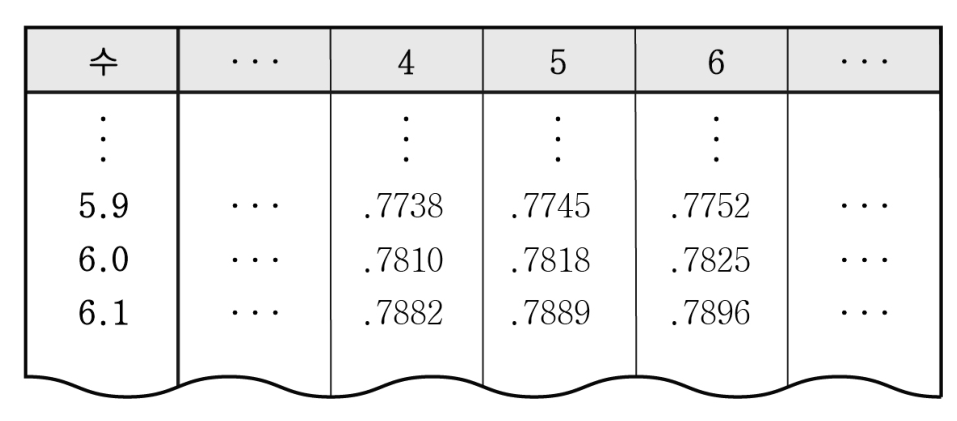
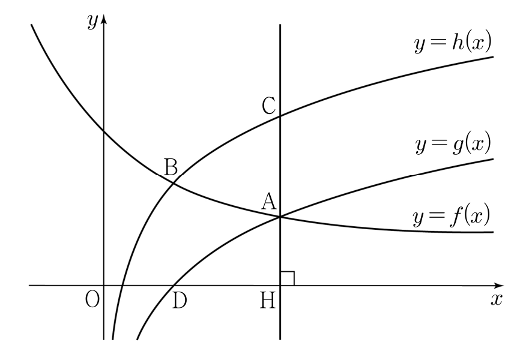

① $\frac{19}{6}$② $\frac{10}{3}$③ $\frac{7}{2}$④ $\frac{11}{3}$⑤ $\frac{23}{6}$
원본 정답 ②
원본 풀이 (내부용)[출제의도] 지수함수를 이용하여 식의 값 계산하기
\(
5^x=\sqrt3
\)
이므로
\(
5^{2x}=3,\quad 5^{-2x}=\frac13
\)
이다.
따라서
\(
5^{2x}+5^{-2x}=3+\frac13=\frac{10}{3}
\)
이다.
생성기 숫자판 1/6 · G2M1-04#16실수 $x$에 대하여 $2^{x}=\sqrt{6}$일 때, $2^{2x}+2^{-2x}$의 값으로 옳은 것을 고르세요.
① $\frac{35}{6}$② $6$③ $\frac{37}{6}$④ $\frac{19}{3}$⑤ $\frac{13}{2}$
정답③ $\frac{37}{6}$ $2^{2x}=\left(2^{x}\right)^{2}=\left(\sqrt{6}\right)^{2}=6$, $2^{-2x}=\frac{1}{2^{2x}}=\frac{1}{6}$ 따라서 $2^{2x}+2^{-2x}=6+\frac{1}{6}=\frac{37}{6}$
숫자: 원본 5 3 5 5 2 → 쌍둥이 2 6 2 2 2 · 같은 수: 2
생성기 숫자판 2/6 · G2M1-04#16실수 $x$에 대하여 $7^{x}=\sqrt{7}$일 때, $7^{2x}+7^{-2x}$의 값으로 옳은 것을 고르세요.
① $\frac{50}{7}$② $\frac{51}{7}$③ $\frac{52}{7}$④ $\frac{53}{7}$⑤ $\frac{57}{7}$
정답① $\frac{50}{7}$ $7^{2x}=\left(7^{x}\right)^{2}=\left(\sqrt{7}\right)^{2}=7$, $7^{-2x}=\frac{1}{7^{2x}}=\frac{1}{7}$ 따라서 $7^{2x}+7^{-2x}=7+\frac{1}{7}=\frac{50}{7}$
숫자: 원본 5 3 5 5 2 → 쌍둥이 7 7 7 7 2 · 같은 수: 2
생성기 숫자판 3/6 · G2M1-04#16실수 $x$에 대하여 $2^{x}=\sqrt{2}$일 때, $2^{2x}+2^{-2x}$의 값으로 옳은 것을 고르세요.
① $1$② $\frac{3}{2}$③ $2$④ $\frac{5}{2}$⑤ $3$
정답④ $\frac{5}{2}$ $2^{2x}=\left(2^{x}\right)^{2}=\left(\sqrt{2}\right)^{2}=2$, $2^{-2x}=\frac{1}{2^{2x}}=\frac{1}{2}$ 따라서 $2^{2x}+2^{-2x}=2+\frac{1}{2}=\frac{5}{2}$
숫자: 원본 5 3 5 5 2 → 쌍둥이 2 2 2 2 2 · 같은 수: 2
생성기 숫자판 4/6 · G2M1-04#16실수 $x$에 대하여 $2^{x}=\sqrt{7}$일 때, $2^{2x}+2^{-2x}$의 값으로 옳은 것을 고르세요.
① $7$② $\frac{50}{7}$③ $\frac{51}{7}$④ $\frac{52}{7}$⑤ $\frac{57}{7}$
정답② $\frac{50}{7}$ $2^{2x}=\left(2^{x}\right)^{2}=\left(\sqrt{7}\right)^{2}=7$, $2^{-2x}=\frac{1}{2^{2x}}=\frac{1}{7}$ 따라서 $2^{2x}+2^{-2x}=7+\frac{1}{7}=\frac{50}{7}$
숫자: 원본 5 3 5 5 2 → 쌍둥이 2 7 2 2 2 · 같은 수: 2
생성기 숫자판 5/6 · G2M1-04#16실수 $x$에 대하여 $7^{x}=\sqrt{6}$일 때, $7^{2x}+7^{-2x}$의 값으로 옳은 것을 고르세요.
① $\frac{37}{6}$② $\frac{19}{3}$③ $\frac{13}{2}$④ $\frac{20}{3}$⑤ $\frac{43}{6}$
정답① $\frac{37}{6}$ $7^{2x}=\left(7^{x}\right)^{2}=\left(\sqrt{6}\right)^{2}=6$, $7^{-2x}=\frac{1}{7^{2x}}=\frac{1}{6}$ 따라서 $7^{2x}+7^{-2x}=6+\frac{1}{6}=\frac{37}{6}$
숫자: 원본 5 3 5 5 2 → 쌍둥이 7 6 7 7 2 · 같은 수: 2
생성기 숫자판 6/6 · G2M1-04#16실수 $x$에 대하여 $7^{x}=\sqrt{2}$일 때, $7^{2x}+7^{-2x}$의 값으로 옳은 것을 고르세요.
① $1$② $\frac{3}{2}$③ $2$④ $\frac{5}{2}$⑤ $3$
정답④ $\frac{5}{2}$ $7^{2x}=\left(7^{x}\right)^{2}=\left(\sqrt{2}\right)^{2}=2$, $7^{-2x}=\frac{1}{7^{2x}}=\frac{1}{2}$ 따라서 $7^{2x}+7^{-2x}=2+\frac{1}{2}=\frac{5}{2}$
숫자: 원본 5 3 5 5 2 → 쌍둥이 7 2 7 7 2 · 같은 수: 2
5. 2019년 6월 가형 5번 · 3점 · 수학Ⅰ 삼각함수 · G2M1-02#8
원본 (내부용)$0 \le x \le 2 \pi$일 때, 방정식 $2\cos x - 1=0$ 의 모든 해의 합은? [3점]
① $\pi$② $\frac{3}{2} \pi$③ $2\pi$④ $\frac{5}{2} \pi$⑤ $3\pi$
원본 정답 ③
원본 풀이 (내부용)[출제의도] 삼각함수의 그래프를 이용하여 삼각함수가 포함된 방정식 이해하기
\(
2\cos x-1=0
\)
을 정리하면 \(\cos x=\frac12\)이므로 이 방정식의 해는 함수 \(y=\cos x\)의 그래프와 직선 \(y=\frac12\)이 만나는 점의 \(x\)좌표와 같다.
그러므로 구하는 해는
\(
x=\frac{\pi}{3}\quad\text{또는}\quad x=\frac{5\pi}{3}
\)
이다.
따라서 모든 해의 합은 \(2\pi\)이다.
생성기 숫자판 1/6 · G2M1-02#8$0\le x\le 2\pi$일 때, 방정식 $\sqrt{2}\cos x+1=0$의 모든 해의 합으로 옳은 것을 고르세요.
① $\pi$② $\frac{3}{2}\pi$③ $2\pi$④ $\frac{5}{2}\pi$⑤ $3\pi$
정답③ $2\pi$ $\sqrt{2}\cos x+1=0$에서 $\cos x=-\frac{\sqrt{2}}{2}$ $0\le x\le 2\pi$에서 $x=\frac{3}{4}\pi$ 또는 $x=\frac{5}{4}\pi$ 따라서 모든 해의 합은 $2\pi$
숫자: 원본 0 2 2 1 0 → 쌍둥이 0 2 2 1 0 · 같은 수: 0 1 2
생성기 숫자판 2/6 · G2M1-02#8$0\le x\le 2\pi$일 때, 방정식 $2\cos x-1=0$의 모든 해의 합으로 옳은 것을 고르세요.
① $\pi$② $\frac{3}{2}\pi$③ $2\pi$④ $\frac{5}{2}\pi$⑤ $3\pi$
정답③ $2\pi$ $2\cos x-1=0$에서 $\cos x=\frac{1}{2}$ $0\le x\le 2\pi$에서 $x=\frac{\pi}{3}$ 또는 $x=\frac{5}{3}\pi$ 따라서 모든 해의 합은 $2\pi$
숫자: 원본 0 2 2 1 0 → 쌍둥이 0 2 2 1 0 · 같은 수: 0 1 2
생성기 숫자판 3/6 · G2M1-02#8$0\le x\le 3\pi$일 때, 방정식 $\sqrt{2}\sin x-1=0$의 모든 해의 합으로 옳은 것을 고르세요.
① $5\pi$② $\frac{11}{2}\pi$③ $6\pi$④ $\frac{13}{2}\pi$⑤ $7\pi$
정답③ $6\pi$ $\sqrt{2}\sin x-1=0$에서 $\sin x=\frac{\sqrt{2}}{2}$ $0\le x\le 3\pi$에서 $x=\frac{\pi}{4}$ 또는 $x=\frac{3}{4}\pi$ 또는 $x=\frac{9}{4}\pi$ 또는 $x=\frac{11}{4}\pi$ 따라서 모든 해의 합은 $6\pi$
숫자: 원본 0 2 2 1 0 → 쌍둥이 0 3 2 1 0 · 같은 수: 0 1 2
생성기 숫자판 4/6 · G2M1-02#8$0\le x\le 3\pi$일 때, 방정식 $\sqrt{2}\sin x+1=0$의 모든 해의 합으로 옳은 것을 고르세요.
① $2\pi$② $\frac{5}{2}\pi$③ $3\pi$④ $\frac{7}{2}\pi$⑤ $4\pi$
정답③ $3\pi$ $\sqrt{2}\sin x+1=0$에서 $\sin x=-\frac{\sqrt{2}}{2}$ $0\le x\le 3\pi$에서 $x=\frac{5}{4}\pi$ 또는 $x=\frac{7}{4}\pi$ 따라서 모든 해의 합은 $3\pi$
숫자: 원본 0 2 2 1 0 → 쌍둥이 0 3 2 1 0 · 같은 수: 0 1 2
생성기 숫자판 5/6 · G2M1-02#8$0\le x\le 3\pi$일 때, 방정식 $2\sin x+1=0$의 모든 해의 합으로 옳은 것을 고르세요.
① $2\pi$② $\frac{5}{2}\pi$③ $3\pi$④ $\frac{7}{2}\pi$⑤ $4\pi$
정답③ $3\pi$ $2\sin x+1=0$에서 $\sin x=-\frac{1}{2}$ $0\le x\le 3\pi$에서 $x=\frac{7}{6}\pi$ 또는 $x=\frac{11}{6}\pi$ 따라서 모든 해의 합은 $3\pi$
숫자: 원본 0 2 2 1 0 → 쌍둥이 0 3 2 1 0 · 같은 수: 0 1 2
생성기 숫자판 6/6 · G2M1-02#8$0\le x\le 3\pi$일 때, 방정식 $\sqrt{2}\cos x-1=0$의 모든 해의 합으로 옳은 것을 고르세요.
① $\frac{13}{4}\pi$② $\frac{15}{4}\pi$③ $\frac{17}{4}\pi$④ $\frac{19}{4}\pi$⑤ $\frac{21}{4}\pi$
정답③ $\frac{17}{4}\pi$ $\sqrt{2}\cos x-1=0$에서 $\cos x=\frac{\sqrt{2}}{2}$ $0\le x\le 3\pi$에서 $x=\frac{\pi}{4}$ 또는 $x=\frac{7}{4}\pi$ 또는 $x=\frac{9}{4}\pi$ 따라서 모든 해의 합은 $\frac{17}{4}\pi$
숫자: 원본 0 2 2 1 0 → 쌍둥이 0 3 2 1 0 · 같은 수: 0 1 2
6. 2019년 6월 가형 6번 · 3점 · 수학Ⅰ 지수·로그 · G2M1-04#14
원본 (내부용)함수 $f ( x ) =2^{x+3} -1 .$의 그래프의 점근선이 직선 $y=k$일 때, $f ( k )$의 값은? (단, $k$는 상수이다.) [3점]
① $1$② $3$③ $5$④ $7$⑤ $9$
원본 정답 ②
원본 풀이 (내부용)[출제의도] 지수함수의 그래프 이해하기
함수
\(
f(x)=2^{x+3}-1
\)
의 그래프의 점근선이 직선 \(y=-1\)이므로 \(k=-1\)이다.
따라서
\(
f(-1)=2^{-1+3}-1=2^2-1=3
\)
이다.
생성기 숫자판 1/6 · G2M1-04#14함수 $f\left(x\right)=3^{x+1}-1$의 그래프의 점근선이 직선 $y=k$일 때, $f\left(k\right)$의 값으로 옳은 것을 고르세요.
① $-4$② $-3$③ $-2$④ $-1$⑤ $0$
정답⑤ $0$ 함수 $f\left(x\right)=3^{x+1}-1$의 그래프의 점근선은 직선 $y=-1$이므로 $k=-1$ $f\left(-1\right)=3^{-1+1}-1$ $=1-1$ $=0$
숫자: 원본 2 3 1 → 쌍둥이 3 1 1 · 같은 수: 1 3
생성기 숫자판 2/6 · G2M1-04#14함수 $f\left(x\right)=3^{x+2}-1$의 그래프의 점근선이 직선 $y=k$일 때, $f\left(k\right)$의 값으로 옳은 것을 고르세요.
① $-2$② $0$③ $2$④ $4$⑤ $6$
정답③ $2$ 함수 $f\left(x\right)=3^{x+2}-1$의 그래프의 점근선은 직선 $y=-1$이므로 $k=-1$ $f\left(-1\right)=3^{-1+2}-1$ $=3-1$ $=2$
숫자: 원본 2 3 1 → 쌍둥이 3 2 1 · 같은 수: 1 2 3
생성기 숫자판 3/6 · G2M1-04#14함수 $f\left(x\right)=3^{x+3}-1$의 그래프의 점근선이 직선 $y=k$일 때, $f\left(k\right)$의 값으로 옳은 것을 고르세요.
① $8$② $9$③ $10$④ $12$⑤ $14$
정답① $8$ 함수 $f\left(x\right)=3^{x+3}-1$의 그래프의 점근선은 직선 $y=-1$이므로 $k=-1$ $f\left(-1\right)=3^{-1+3}-1$ $=9-1$ $=8$
숫자: 원본 2 3 1 → 쌍둥이 3 3 1 · 같은 수: 1 3
생성기 숫자판 4/6 · G2M1-04#14함수 $f\left(x\right)=3^{x+4}-1$의 그래프의 점근선이 직선 $y=k$일 때, $f\left(k\right)$의 값으로 옳은 것을 고르세요.
① $26$② $27$③ $28$④ $30$⑤ $32$
정답① $26$ 함수 $f\left(x\right)=3^{x+4}-1$의 그래프의 점근선은 직선 $y=-1$이므로 $k=-1$ $f\left(-1\right)=3^{-1+4}-1$ $=27-1$ $=26$
숫자: 원본 2 3 1 → 쌍둥이 3 4 1 · 같은 수: 1 3
생성기 숫자판 5/6 · G2M1-04#14함수 $f\left(x\right)=3^{x+1}+1$의 그래프의 점근선이 직선 $y=k$일 때, $f\left(k\right)$의 값으로 옳은 것을 고르세요.
① $8$② $10$③ $12$④ $14$⑤ $16$
정답② $10$ 함수 $f\left(x\right)=3^{x+1}+1$의 그래프의 점근선은 직선 $y=1$이므로 $k=1$ $f\left(1\right)=3^{1+1}+1$ $=9+1$ $=10$
숫자: 원본 2 3 1 → 쌍둥이 3 1 1 · 같은 수: 1 3
생성기 숫자판 6/6 · G2M1-04#14함수 $f\left(x\right)=3^{x+4}-3$의 그래프의 점근선이 직선 $y=k$일 때, $f\left(k\right)$의 값으로 옳은 것을 고르세요.
① $-2$② $0$③ $2$④ $4$⑤ $6$
정답② $0$ 함수 $f\left(x\right)=3^{x+4}-3$의 그래프의 점근선은 직선 $y=-3$이므로 $k=-3$ $f\left(-3\right)=3^{-3+4}-3$ $=3-3$ $=0$
숫자: 원본 2 3 1 → 쌍둥이 3 4 3 · 같은 수: 3
7. 2019년 6월 가형 7번 · 3점 · 수학Ⅰ 지수·로그 · G2M8-02#0
원본 (내부용)다음은 상용로그표의 일부이다. 이 표를 이용하여 구한 $\log \sqrt{6.04}$의 값은? [3점]

① $0.3905$② $0.7810$③ $1.3905$④ $1.7810$⑤ $2.3905$
원본 정답 ①
원본 풀이 (내부용)[출제의도] 상용로그표 이해하기
**표:** 상용로그표. 열에 \(4,5,6\), 행에 \(5.9,6.0,6.1\) 등이 표시되어 있으며, \(6.0\)행과 \(4\)열의 값은 \(.7810\)이다.
상용로그표에서 \(\log 6.04=0.7810\)이므로
\(
\log\sqrt{6.04}
=\frac12\log 6.04
=\frac12\times0.7810
=0.3905
\)
이다.
생성기 숫자판 1/6 · G2M8-02#0다음은 상용로그표의 일부입니다. 이 표를 이용하여 구한 $\log 36$의 값으로 옳은 것을 고르세요.
① $-0.4437$② $0.5563$③ $1.5563$④ $1.5575$⑤ $1.5587$
원본 (내부용)좌표평면 위의 원점 $\mathrm{O}$에서 $x$축의 양의 방향으로 시초선을 잡을 때, 원점 $\mathrm{O}$와 점 $\mathrm{P} ( 5,12 )$를 지나는 동경 $\mathrm{OP}$가 나타내는 각의 크기를 $\theta$라 하자. $\sin ( \frac{3}{2} \pi + \theta )$의 값은? [3점]
① $- \frac{12}{13}$② $- \frac{7}{13}$③ $- \frac{5}{13}$④ $\frac{5}{13}$⑤ $\frac{7}{13}$
원본 정답 ③
원본 풀이 (내부용)[출제의도] 삼각함수의 일반각 이해하기
\(
\sin\left(\frac32\pi+\theta\right)=-\cos\theta
\)
이다.
원점 \(O\)와 점 \(P(5,12)\)를 지나는 동경 \(OP\)가 나타내는 각의 크기를 \(\theta\)라 하면
\(
\cos\theta=\frac5{13}
\)
이다.
따라서
\(
\sin\left(\frac32\pi+\theta\right)
=-\cos\theta=-\frac5{13}
\)
이다.
생성기 숫자판 1/6 · G2M1-02b#5좌표평면 위의 점 $\mathrm{P}\left(6,\ 8\right)$에 대하여 동경 $\mathrm{OP}$가 나타내는 각의 크기를 $\theta$라 할 때, $3\sin\left(\frac{\pi}{2}-\theta\right)$의 값으로 옳은 것을 고르세요. (단, $\mathrm{O}$는 원점이고, $x$축의 양의 방향을 시초선으로 합니다.)
① $\frac{9}{5}$② $2$③ $\frac{11}{5}$④ $\frac{12}{5}$⑤ $\frac{13}{5}$
생성기 숫자판 2/6 · G2M1-02b#5좌표평면 위의 점 $\mathrm{P}\left(4,\ -3\right)$에 대하여 동경 $\mathrm{OP}$가 나타내는 각의 크기를 $\theta$라 할 때, $3\cos\left(\frac{\pi}{2}+\theta\right)-2\sin\left(\pi-\theta\right)$의 값으로 옳은 것을 고르세요. (단, $\mathrm{O}$는 원점이고, $x$축의 양의 방향을 시초선으로 합니다.)
생성기 숫자판 3/6 · G2M1-02b#5좌표평면 위의 점 $\mathrm{P}\left(-3,\ -4\right)$에 대하여 동경 $\mathrm{OP}$가 나타내는 각의 크기를 $\theta$라 할 때, $\sin\left(-\theta\right)-2\sin\left(\frac{3}{2}\pi-\theta\right)$의 값으로 옳은 것을 고르세요. (단, $\mathrm{O}$는 원점이고, $x$축의 양의 방향을 시초선으로 합니다.)
① $-\frac{3}{5}$② $-\frac{2}{5}$③ $-\frac{1}{5}$④ $0$⑤ $\frac{1}{5}$
생성기 숫자판 4/6 · G2M1-02b#5좌표평면 위의 점 $\mathrm{P}\left(4,\ -3\right)$에 대하여 동경 $\mathrm{OP}$가 나타내는 각의 크기를 $\theta$라 할 때, $\cos\left(\pi-\theta\right)$의 값으로 옳은 것을 고르세요. (단, $\mathrm{O}$는 원점이고, $x$축의 양의 방향을 시초선으로 합니다.)
① $-\frac{4}{5}$② $-\frac{3}{5}$③ $-\frac{2}{5}$④ $-\frac{1}{5}$⑤ $0$
생성기 숫자판 5/6 · G2M1-02b#5좌표평면 위의 점 $\mathrm{P}\left(4,\ 3\right)$에 대하여 동경 $\mathrm{OP}$가 나타내는 각의 크기를 $\theta$라 할 때, $3\sin\left(\frac{\pi}{2}+\theta\right)-\sin\left(\frac{\pi}{2}-\theta\right)$의 값으로 옳은 것을 고르세요. (단, $\mathrm{O}$는 원점이고, $x$축의 양의 방향을 시초선으로 합니다.)
① $\frac{6}{5}$② $\frac{7}{5}$③ $\frac{8}{5}$④ $\frac{9}{5}$⑤ $2$
생성기 숫자판 6/6 · G2M1-02b#5좌표평면 위의 점 $\mathrm{P}\left(-5,\ -12\right)$에 대하여 동경 $\mathrm{OP}$가 나타내는 각의 크기를 $\theta$라 할 때, $2\cos\left(\frac{\pi}{2}+\theta\right)$의 값으로 옳은 것을 고르세요. (단, $\mathrm{O}$는 원점이고, $x$축의 양의 방향을 시초선으로 합니다.)
① $\frac{21}{13}$② $\frac{22}{13}$③ $\frac{23}{13}$④ $\frac{24}{13}$⑤ $\frac{25}{13}$
원본 (내부용)세 양수 $a$, $b$, $c$에 대하여 함수 $y=acosbx+c$의 그래프가 그림과 같을 때, $2a+b+c$의 값은? [3점] $\mathrm{O}$ $4$ $y$ $x$ $\pi$ $-\pi$ $-2$ $y=acosbx+c$
① $7$② $8$③ $9$④ $10$⑤ $11$
원본 정답 ③
원본 풀이 (내부용)[출제의도] 삼각함수의 그래프 이해하기
주어진 삼각함수의 주기가
\(
\frac{2\pi}{b}=\pi
\)
이므로 \(b=2\)이다. 이 함수의 최댓값이 \(4\), 최솟값이 \(-2\)이므로
\(
a+c=4,\quad -a+c=-2
\)
에서 \(a=3,\ c=1\)이다.
따라서 \(2a+b+c=9\)이다.
생성기 숫자판 1/6 · G2f-11#1세 양수 $a$, $b$, $c$에 대하여 함수 $y=a\cos bx+c$의 그래프가 그림과 같을 때, 주기는 $\frac{1}{3}\pi$이고 최솟값은 $-2$이고 최댓값은 $8$이다. $3a+b+c$의 값으로 옳은 것을 고르세요.
① $22$② $23$③ $24$④ $25$⑤ $26$
정답③ $24$ 그래프에서 최댓값이 $8$, 최솟값이 $-2$이고 $a>0$이므로 $a+c=8$, $-a+c=-2$ 두 식을 연립하면 $a=5$, $c=3$ $x=0$에서 최대이고 다음 최대가 $x=\frac{2\pi}{6}$이므로 주기는 $\frac{2\pi}{6}$ $b>0$이므로 $\frac{2\pi}{b}=\frac{2\pi}{6}$에서 $b=6$ 따라서 $3a+b+c=3\times 5+6+3=24$
숫자: 원본 2 4 2 → 쌍둥이 1 3 2 8 3 · 같은 수: 2
생성기 숫자판 2/6 · G2f-11#1세 양수 $a$, $b$, $c$에 대하여 함수 $y=a\cos bx+c$의 그래프가 그림과 같을 때, 주기는 $\frac{2}{5}\pi$이고 최솟값은 $-1$이고 최댓값은 $3$이다. $3a+b+c$의 값으로 옳은 것을 고르세요.
① $10$② $11$③ $12$④ $13$⑤ $14$
정답③ $12$ 그래프에서 최댓값이 $3$, 최솟값이 $-1$이고 $a>0$이므로 $a+c=3$, $-a+c=-1$ 두 식을 연립하면 $a=2$, $c=1$ $x=0$에서 최대이고 다음 최대가 $x=\frac{2\pi}{5}$이므로 주기는 $\frac{2\pi}{5}$ $b>0$이므로 $\frac{2\pi}{b}=\frac{2\pi}{5}$에서 $b=5$ 따라서 $3a+b+c=3\times 2+5+1=12$
숫자: 원본 2 4 2 → 쌍둥이 2 5 1 3 3 · 같은 수: 2
생성기 숫자판 3/6 · G2f-11#1세 양수 $a$, $b$, $c$에 대하여 함수 $y=a\cos bx+c$의 그래프가 그림과 같을 때, 주기는 $1\pi$이고 최솟값은 $-2$이고 최댓값은 $6$이다. $3a+b+c$의 값으로 옳은 것을 고르세요.
① $14$② $15$③ $16$④ $17$⑤ $18$
정답③ $16$ 그래프에서 최댓값이 $6$, 최솟값이 $-2$이고 $a>0$이므로 $a+c=6$, $-a+c=-2$ 두 식을 연립하면 $a=4$, $c=2$ $x=0$에서 최대이고 다음 최대가 $x=\pi$이므로 주기는 $\pi$ $b>0$이므로 $\frac{2\pi}{b}=\pi$에서 $b=2$ 따라서 $3a+b+c=3\times 4+2+2=16$
숫자: 원본 2 4 2 → 쌍둥이 1 2 6 3 · 같은 수: 2
생성기 숫자판 4/6 · G2f-11#1세 양수 $a$, $b$, $c$에 대하여 함수 $y=a\cos bx+c$의 그래프가 그림과 같을 때, 주기는 $\frac{1}{3}\pi$이고 최솟값은 $-1$이고 최댓값은 $3$이다. $3a+b+c$의 값으로 옳은 것을 고르세요.
① $11$② $12$③ $13$④ $14$⑤ $15$
정답③ $13$ 그래프에서 최댓값이 $3$, 최솟값이 $-1$이고 $a>0$이므로 $a+c=3$, $-a+c=-1$ 두 식을 연립하면 $a=2$, $c=1$ $x=0$에서 최대이고 다음 최대가 $x=\frac{2\pi}{6}$이므로 주기는 $\frac{2\pi}{6}$ $b>0$이므로 $\frac{2\pi}{b}=\frac{2\pi}{6}$에서 $b=6$ 따라서 $3a+b+c=3\times 2+6+1=13$
숫자: 원본 2 4 2 → 쌍둥이 1 3 1 3 3
생성기 숫자판 5/6 · G2f-11#1세 양수 $a$, $b$, $c$에 대하여 함수 $y=a\cos bx+c$의 그래프가 그림과 같을 때, 주기는 $\frac{2}{5}\pi$이고 최솟값은 $-1$이고 최댓값은 $7$이다. $3a+b+c$의 값으로 옳은 것을 고르세요.
① $18$② $19$③ $20$④ $21$⑤ $22$
정답③ $20$ 그래프에서 최댓값이 $7$, 최솟값이 $-1$이고 $a>0$이므로 $a+c=7$, $-a+c=-1$ 두 식을 연립하면 $a=4$, $c=3$ $x=0$에서 최대이고 다음 최대가 $x=\frac{2\pi}{5}$이므로 주기는 $\frac{2\pi}{5}$ $b>0$이므로 $\frac{2\pi}{b}=\frac{2\pi}{5}$에서 $b=5$ 따라서 $3a+b+c=3\times 4+5+3=20$
숫자: 원본 2 4 2 → 쌍둥이 2 5 1 7 3 · 같은 수: 2
생성기 숫자판 6/6 · G2f-11#1세 양수 $a$, $b$, $c$에 대하여 함수 $y=a\cos bx+c$의 그래프가 그림과 같을 때, 주기는 $\frac{2}{5}\pi$이고 최솟값은 $-1$이고 최댓값은 $5$이다. $3a+b+c$의 값으로 옳은 것을 고르세요.
① $14$② $15$③ $16$④ $17$⑤ $18$
정답③ $16$ 그래프에서 최댓값이 $5$, 최솟값이 $-1$이고 $a>0$이므로 $a+c=5$, $-a+c=-1$ 두 식을 연립하면 $a=3$, $c=2$ $x=0$에서 최대이고 다음 최대가 $x=\frac{2\pi}{5}$이므로 주기는 $\frac{2\pi}{5}$ $b>0$이므로 $\frac{2\pi}{b}=\frac{2\pi}{5}$에서 $b=5$ 따라서 $3a+b+c=3\times 3+5+2=16$
숫자: 원본 2 4 2 → 쌍둥이 2 5 1 5 3 · 같은 수: 2
11. 2019년 6월 가형 11번 · 3점 · 수학Ⅰ 지수·로그 · G2M1-04b#0
원본 (내부용)$-2 \le x \le 4$에서 정의된 함수 $f ( x ) = ( \frac{1}{2} )^{ x+a}$의 최솟값이 $\frac{1}{8}$일 때, 함수 $f ( x )$의 최댓값은? (단, $a$는 상수이다.) [3점]
① $1$② $2$③ $4$④ $8$⑤ $16$
원본 정답 ④
원본 풀이 (내부용)[출제의도] 지수함수의 그래프 이해하기
함수
\(
f(x)=\left(\frac12\right)^{x+a}
\)
은 \(x\)의 값이 증가하면 \(y\)의 값이 감소하므로 \(x=-2\)에서 최댓값을 가지고, \(x=4\)에서 최솟값 \(\frac18\)을 가진다.
\(
f(4)=\left(\frac12\right)^{4+a}
=\left(\frac12\right)^3
\)
에서 \(4+a=3\)이므로 \(a=-1\)이고,
\(
f(x)=\left(\frac12\right)^{x-1}
\)
이다.
따라서 최댓값은
\(
f(-2)=\left(\frac12\right)^{-3}=8
\)
이다.
생성기 숫자판 1/6 · G2M1-04b#0$-1\le x\le 4$에서 정의된 함수 $f\left(x\right)=2^{x+a}$의 최솟값이 $2$일 때, 함수 $f\left(x\right)$의 최댓값으로 옳은 것을 고르세요. (단, $a$는 상수입니다.)
생성기 숫자판 2/6 · G2M1-04b#0$-3\le x\le 3$에서 정의된 함수 $f\left(x\right)=\left(\frac{1}{3}\right)^{x+a}$의 최솟값이 $\frac{1}{9}$일 때, 함수 $f\left(x\right)$의 최댓값으로 옳은 것을 고르세요. (단, $a$는 상수입니다.)
① $\frac{81}{2}$② $81$③ $\frac{243}{2}$④ $162$⑤ $\frac{405}{2}$
생성기 숫자판 3/6 · G2M1-04b#0$0\le x\le 5$에서 정의된 함수 $f\left(x\right)=\left(\frac{1}{2}\right)^{x+a}$의 최솟값이 $\frac{1}{64}$일 때, 함수 $f\left(x\right)$의 최댓값으로 옳은 것을 고르세요. (단, $a$는 상수입니다.)
① $\frac{1}{8}$② $\frac{1}{4}$③ $\frac{1}{2}$④ $1$⑤ $2$
생성기 숫자판 5/6 · G2M1-04b#0$-1\le x\le 2$에서 정의된 함수 $f\left(x\right)=2^{x+a}$의 최솟값이 $\frac{1}{4}$일 때, 함수 $f\left(x\right)$의 최댓값으로 옳은 것을 고르세요. (단, $a$는 상수입니다.)
생성기 숫자판 6/6 · G2M1-04b#0$-2\le x\le 4$에서 정의된 함수 $f\left(x\right)=2^{x+a}$의 최솟값이 $\frac{1}{16}$일 때, 함수 $f\left(x\right)$의 최댓값으로 옳은 것을 고르세요. (단, $a$는 상수입니다.)
원본 (내부용)함수 $y=2+\log_{ 2} x$의 그래프를 $x$축의 방향으로 $-8$만큼, $y$축의 방향으로 $k$만큼 평행이동한 그래프가 제$4$사분면을 지나지 않도록 하는 실수 $k$의 최솟값은? [3점]
① $-1$② $-2$③ $-3$④ $-4$⑤ $-5$
원본 정답 ⑤
원본 풀이 (내부용)[출제의도] 로그함수의 그래프 이해하기
함수 \(y=2+\log_2 x\)의 그래프를 \(x\)축의 방향으로 \(-8\)만큼, \(y\)축의 방향으로 \(k\)만큼 평행이동한 그래프를 나타내는 함수는
\(
y=\log_2(x+8)+k+2
\)
이다.
이 함수의 그래프가 제4사분면을 지나지 않으려면 \(x=0\)일 때 함수값이 \(0\) 이상이어야 한다. 즉,
\(
\log_2 8+k+2\ge0
\)
에서 \(k\ge-5\)이다.
따라서 실수 \(k\)의 최솟값은 \(-5\)이다.
생성기 숫자판 1/6 · G2M1-01b#9함수 $y=6+\log_{13}x$의 그래프를 $x$축의 방향으로 $-169$만큼, $y$축의 방향으로 $k$만큼 평행이동한 그래프가 제$4$사분면을 지나지 않도록 하는 실수 $k$의 최솟값으로 옳은 것을 고르세요.
① $-11$② $-10$③ $-9$④ $-8$⑤ $-7$
정답④ $-8$ 평행이동한 그래프의 식은 $y=6+\log_{13}\left(x+169\right)+k$ 이 함수는 증가하는 함수이므로 그래프가 제$4$사분면을 지나지 않으려면 $x=0$일 때 $y\ge 0$이어야 합니다. $6+\log_{13}169+k\ge 0$, $8+k\ge 0$이므로 $k\ge -8$ 따라서 실수 $k$의 최솟값은 $-8$
숫자: 원본 2 2 8 4 → 쌍둥이 6 13 169 4 · 같은 수: 4
생성기 숫자판 2/6 · G2M1-01b#9함수 $y=5+\log_{7}x$의 그래프를 $x$축의 방향으로 $-7$만큼, $y$축의 방향으로 $k$만큼 평행이동한 그래프가 제$4$사분면을 지나지 않도록 하는 실수 $k$의 최솟값으로 옳은 것을 고르세요.
① $-10$② $-9$③ $-8$④ $-7$⑤ $-6$
정답⑤ $-6$ 평행이동한 그래프의 식은 $y=5+\log_{7}\left(x+7\right)+k$ 이 함수는 증가하는 함수이므로 그래프가 제$4$사분면을 지나지 않으려면 $x=0$일 때 $y\ge 0$이어야 합니다. $5+\log_{7}7+k\ge 0$, $6+k\ge 0$이므로 $k\ge -6$ 따라서 실수 $k$의 최솟값은 $-6$
숫자: 원본 2 2 8 4 → 쌍둥이 5 7 7 4 · 같은 수: 4
생성기 숫자판 3/6 · G2M1-01b#9함수 $y=6+\log_{13}x$의 그래프를 $x$축의 방향으로 $-2197$만큼, $y$축의 방향으로 $k$만큼 평행이동한 그래프가 제$4$사분면을 지나지 않도록 하는 실수 $k$의 최솟값으로 옳은 것을 고르세요.
① $-13$② $-12$③ $-11$④ $-10$⑤ $-9$
정답⑤ $-9$ 평행이동한 그래프의 식은 $y=6+\log_{13}\left(x+2197\right)+k$ 이 함수는 증가하는 함수이므로 그래프가 제$4$사분면을 지나지 않으려면 $x=0$일 때 $y\ge 0$이어야 합니다. $6+\log_{13}2197+k\ge 0$, $9+k\ge 0$이므로 $k\ge -9$ 따라서 실수 $k$의 최솟값은 $-9$
숫자: 원본 2 2 8 4 → 쌍둥이 6 13 2197 4 · 같은 수: 4
생성기 숫자판 4/6 · G2M1-01b#9함수 $y=4+\log_{11}x$의 그래프를 $x$축의 방향으로 $-121$만큼, $y$축의 방향으로 $k$만큼 평행이동한 그래프가 제$4$사분면을 지나지 않도록 하는 실수 $k$의 최솟값으로 옳은 것을 고르세요.
① $-6$② $-5$③ $-4$④ $-3$⑤ $-2$
정답① $-6$ 평행이동한 그래프의 식은 $y=4+\log_{11}\left(x+121\right)+k$ 이 함수는 증가하는 함수이므로 그래프가 제$4$사분면을 지나지 않으려면 $x=0$일 때 $y\ge 0$이어야 합니다. $4+\log_{11}121+k\ge 0$, $6+k\ge 0$이므로 $k\ge -6$ 따라서 실수 $k$의 최솟값은 $-6$
숫자: 원본 2 2 8 4 → 쌍둥이 4 11 121 4 · 같은 수: 4
생성기 숫자판 5/6 · G2M1-01b#9함수 $y=4+\log_{11}x$의 그래프를 $x$축의 방향으로 $-1331$만큼, $y$축의 방향으로 $k$만큼 평행이동한 그래프가 제$4$사분면을 지나지 않도록 하는 실수 $k$의 최솟값으로 옳은 것을 고르세요.
① $-8$② $-7$③ $-6$④ $-5$⑤ $-4$
정답② $-7$ 평행이동한 그래프의 식은 $y=4+\log_{11}\left(x+1331\right)+k$ 이 함수는 증가하는 함수이므로 그래프가 제$4$사분면을 지나지 않으려면 $x=0$일 때 $y\ge 0$이어야 합니다. $4+\log_{11}1331+k\ge 0$, $7+k\ge 0$이므로 $k\ge -7$ 따라서 실수 $k$의 최솟값은 $-7$
숫자: 원본 2 2 8 4 → 쌍둥이 4 11 1331 4 · 같은 수: 4
생성기 숫자판 6/6 · G2M1-01b#9함수 $y=5+\log_{5}x$의 그래프를 $x$축의 방향으로 $-125$만큼, $y$축의 방향으로 $k$만큼 평행이동한 그래프가 제$4$사분면을 지나지 않도록 하는 실수 $k$의 최솟값으로 옳은 것을 고르세요.
① $-9$② $-8$③ $-7$④ $-6$⑤ $-5$
정답② $-8$ 평행이동한 그래프의 식은 $y=5+\log_{5}\left(x+125\right)+k$ 이 함수는 증가하는 함수이므로 그래프가 제$4$사분면을 지나지 않으려면 $x=0$일 때 $y\ge 0$이어야 합니다. $5+\log_{5}125+k\ge 0$, $8+k\ge 0$이므로 $k\ge -8$ 따라서 실수 $k$의 최솟값은 $-8$
원본 (내부용)반지름의 길이가 $r$인 원형 도선에 세기가 $I$인 전류가 흐를 때, 원형 도선의 중심에서 수직 거리 $x$만큼 떨어진 지점에서의 자기장의 세기를 $B$라 하면 다음과 같은 관계식이 성립한다고 한다. $B = \frac{k I r^{ 2}}{2(x^{ 2} +r^{ 2} )^{\frac{3}{2}}}$ (단, $k$는 상수이다.) 전류의 세기가 $I_{0} ( I_{0} >0 )$으로 일정할 때, 반지름의 길이가 $r_1$인 원형 도선의 중심에서 수직 거리 $x_1$만큼 떨어진 지점에서의 자기장의 세기를 $B_1$, 반지름의 길이가 $3r_1$인 원형 도선의 중심에서 수직 거리 $3x_1$만큼 떨어진 지점에서의 자기장의 세기를 $B_2$라 하자. $\frac{B_2}{B_1 }$의 값은? (단, 전류의 세기의 단위는 $\mathrm{A}$, 자기장의 세기의 단위는 $\mathrm{T}$, 길이와 거리의 단위는 $\mathrm{m}$이다.) [4점]
① $\frac{1}{6}$② $\frac{1}{4}$③ $\frac{1}{3}$④ $\frac{5}{12}$⑤ $\frac{1}{2}$
원본 정답 ③
원본 풀이 (내부용)[출제의도] 지수법칙을 이용하여 실생활 문제 해결하기
\(
B_1=\frac{kI_0r_1^2}{2(x_1^2+r_1^2)^{\frac32}},
\)
\(
B_2
=\frac{kI_0(3r_1)^2}{2\{(3x_1)^2+(3r_1)^2\}^{\frac32}}
=\frac{kI_0\times9r_1^2}{2(9x_1^2+9r_1^2)^{\frac32}}
\)
\(
=\frac{9kI_0r_1^2}{2\times9^{\frac32}(x_1^2+r_1^2)^{\frac32}}
=\frac{kI_0r_1^2}{6(x_1^2+r_1^2)^{\frac32}}
=\frac13B_1
\)
이므로
\(
\frac{B_2}{B_1}=\frac13
\)
이다.
쌍둥이 1/5 · 4점 쌍둥이반지름 $r$인 원형 도선에 전류 $I$가 흐를 때 중심에서 수직 거리 $x$인 점의 자기장 세기는 $B=\frac{kIr^2}{2(x^2+r^2)^{3/2}}$입니다. 전류는 일정하며, 첫 도선의 반지름과 거리가 $r_1,x_1$이고 두 번째 도선의 반지름과 거리가 각각 $7r_1,7x_1$일 때 $B_2/B_1$을 구하세요.
① $1/9$② $1/8$③ $1/7$④ $1/6$⑤ $1/5$
정답③ $1/7$ 두 번째 도선의 반지름과 거리가 모두 7배이므로 분자는 49배가 됩니다. 분모는 안쪽이 49배가 되어 거듭제곱 $3/2$에 의해 $7^3=343$배가 됩니다. 따라서 $B_2/B_1=49/343=1/7$입니다.
쌍둥이 2/5 · 4점 쌍둥이반지름 $r$인 원형 도선에 전류 $I$가 흐를 때 중심에서 수직 거리 $x$인 점의 자기장 세기는 $B=\frac{kIr^2}{2(x^2+r^2)\sqrt{x^2+r^2}}$이다. 전류가 일정하고 첫 도선의 반지름과 거리가 $r_1,x_1$일 때, 두 번째 도선의 반지름과 거리가 각각 $2r_1,2x_1$이면 $B_2/B_1$은 얼마인가?
① $\frac{1}{4}$② $\frac{3}{8}$③ $\frac{1}{2}$④ $\frac{5}{8}$⑤ $\frac{3}{4}$
정답③ $\frac{1}{2}$ $S=x_1^2+r_1^2$라 두면 $B_1=kIr_1^2/(2S\sqrt S)$이다. 두 번째 도선은 반지름과 거리가 모두 $2$배이므로 분자는 $2^2$배, $(x^2+r^2)\sqrt{x^2+r^2}$은 $2^3$배가 된다. 따라서 $B_2/B_1=2^2/2^3=1/2$이다.
쌍둥이 3/5 · 4점 쌍둥이반지름 $r$인 원형 도선에 전류 $I$가 흐를 때 중심에서 수직 거리 $x$인 점의 자기장 세기는 $B=\frac{kIr^2}{2(x^2+r^2)\sqrt{x^2+r^2}}$이다. 전류가 일정하고 첫 도선의 반지름과 거리가 $r_1,x_1$일 때, 두 번째 도선의 반지름과 거리가 각각 $4r_1,4x_1$이면 $B_2/B_1$은 얼마인가?
① $\frac{1}{8}$② $\frac{3}{16}$③ $\frac{1}{4}$④ $\frac{5}{16}$⑤ $\frac{3}{8}$
정답③ $\frac{1}{4}$ $S=x_1^2+r_1^2$라 두면 두 번째 식의 분자에는 $4^2$배, $(x^2+r^2)\sqrt{x^2+r^2}$에는 $4^3$배가 생긴다. 따라서 $B_2/B_1=4^2/4^3=1/4$이다.
쌍둥이 4/5 · 4점 쌍둥이반지름 $r$인 원형 도선에 전류 $I$가 흐를 때 중심에서 수직 거리 $x$인 점의 자기장 세기는 $B=\frac{kIr^2}{2(x^2+r^2)\sqrt{x^2+r^2}}$이다. 전류가 일정하고 첫 도선의 반지름과 거리가 $r_1,x_1$일 때, 두 번째 도선의 반지름과 거리가 각각 $5r_1,5x_1$이면 $B_2/B_1$은 얼마인가?
① $\frac{1}{10}$② $\frac{3}{20}$③ $\frac{1}{5}$④ $\frac{1}{4}$⑤ $\frac{3}{10}$
정답③ $\frac{1}{5}$ $S=x_1^2+r_1^2$라 두면 두 번째 식의 분자에는 $5^2$배, $(x^2+r^2)\sqrt{x^2+r^2}$에는 $5^3$배가 생긴다. 따라서 $B_2/B_1=5^2/5^3=1/5$이다.
쌍둥이 5/5 · 4점 쌍둥이반지름 $r$인 원형 도선에 전류 $I$가 흐를 때 중심에서 수직 거리 $x$인 점의 자기장 세기는 $B=\frac{kIr^2}{2(x^2+r^2)^{3/2}}$입니다. 전류는 일정하며, 첫 도선의 반지름과 거리가 $r_1,x_1$이고 두 번째 도선의 반지름과 거리가 각각 $6r_1,6x_1$일 때 $B_2/B_1$을 구하세요.
① $1/8$② $1/7$③ $1/6$④ $1/5$⑤ $1/4$
정답③ $1/6$ 두 번째 도선의 반지름과 거리는 모두 6배이므로 분자는 $r^2$의 변화로 36배가 됩니다. 분모의 $(x^2+r^2)^{3/2}$은 안쪽이 36배이므로 $6^3=216$배가 됩니다. 따라서 $B_2/B_1=36/216=1/6$입니다.
원본 (내부용)다음은 $0< \theta <2 \pi$에서 $3+2\sin^{2} \theta + \frac{1}{3-2\cos^{2} \theta }$의 최솟값을 구하는 과정이다. $3+2\sin^{2} \theta =t$로 놓으면 $3+2\sin^{2} \theta + \frac{1}{3-2\cos^{2} \theta } =t+ \frac{1}{{\boxed{\text{(가)}}}}$ 이다. $0< \theta <2 \pi$에서 $t \ge 3$이므로 ${\boxed{\text{(가)}}}$$>0$이다. $t+ \frac{1}{{\boxed{\text{(가)}}}} =t-2+ \frac{1}{{\boxed{\text{(가)}}}} +2 \ge 4$ 이다. (단, 등호는 $t=$${\boxed{\text{(나)}}}$일 때 성립한다.) 따라서 $3+2\sin^{2} \theta + \frac{1}{3-2\cos^{2} \theta }$은 $\theta =$${\boxed{\text{(다)}}}$에서 최솟값 $4$를 갖는다. 위의 (가)에 알맞은 식을 $f(t)$, (나)와 (다)에 알맞은 수를 각각 $p$, $q$라 할 때, $f ( p ) +\tan^{2} ( q+ \frac{\pi }{3} )$의 값은? [4점]
① $4$② $5$③ $6$④ $7$⑤ $8$
원본 정답 ①
원본 풀이 (내부용)[출제의도] 삼각함수의 성질을 이용하여 추론하기
\(
3+2\sin^2\theta=t
\)
로 놓으면
\(
3+2\sin^2\theta+\frac1{3-2\cos^2\theta}
=t+\frac1{t-2}
\)
이다. \(0<\theta<2\pi\)에서 \(t\ge3\)이므로
\(
t-2>0
\)
이다.
\(
t+\frac1{t-2}
=t-2+\frac1{t-2}+2\ge4
\)
이다. (단, 등호는 \(t-2=\frac1{t-2}\)에서 \(t=3\)일 때 성립한다.)
따라서 \(3+2\sin^2\theta=t=3\)일 때 \(\theta=\pi\)이고, 이때
\(
3+2\sin^2\theta+\frac1{3-2\cos^2\theta}
\)
은 최솟값 4를 갖는다.
\(
f(t)=t-2,\quad p=3,\quad q=\pi
\)
이므로
\(
f(p)+\tan^2\left(q+\frac\pi3\right)
=f(3)+\tan^2\left(\pi+\frac\pi3\right)
=1+3=4
\)
이다.
쌍둥이 1/5 · 4점 쌍둥이다음은 $0<\theta<2\pi$에서 $2+\sin^{2}\theta+\frac{1}{2-\cos^{2}\theta}$의 최솟값을 구하는 과정입니다. $2+\sin^{2}\theta=t$로 놓으면 $2+\sin^{2}\theta+\frac{1}{2-\cos^{2}\theta}=t+\frac{1}{\boxed{\text{(가)}}}$입니다. $0<\theta<2\pi$에서 $t\ge2$이므로 $\boxed{\text{(가)}}>0$이고 $t+\frac{1}{\boxed{\text{(가)}}}=t-1+\frac{1}{\boxed{\text{(가)}}}+1\ge3$입니다. (단, 등호는 $t=\boxed{\text{(나)}}$일 때 성립합니다.) 따라서 주어진 식은 $\theta=\boxed{\text{(다)}}$에서 최솟값 $3$을 갖습니다. 위의 (가)에 알맞은 식을 $f(t)$, (나)와 (다)에 알맞은 수를 각각 $p$, $q$라 할 때, $f(2p)+\tan^{2}\left(q+\frac{\pi}{4}\right)$의 값으로 옳은 것을 고르세요.
쌍둥이 2/5 · 4점 쌍둥이다음은 $0<\theta<2\pi$에서 $4+3\sin^{2}\theta+\frac{1}{4-3\cos^{2}\theta}$의 최솟값을 구하는 과정입니다. $4+3\sin^{2}\theta=t$로 놓으면 $4+3\sin^{2}\theta+\frac{1}{4-3\cos^{2}\theta}=t+\frac{1}{\boxed{\text{(가)}}}$입니다. $0<\theta<2\pi$에서 $t\ge4$이므로 $\boxed{\text{(가)}}>0$이고 $t+\frac{1}{\boxed{\text{(가)}}}=t-3+\frac{1}{\boxed{\text{(가)}}}+3\ge5$입니다. (단, 등호는 $t=\boxed{\text{(나)}}$일 때 성립합니다.) 따라서 주어진 식은 $\theta=\boxed{\text{(다)}}$에서 최솟값 $5$를 갖습니다. 위의 (가)에 알맞은 식을 $f(t)$, (나)와 (다)에 알맞은 수를 각각 $p$, $q$라 할 때, $f(p)+\tan^{2}\left(q+\frac{\pi}{4}\right)$의 값으로 옳은 것을 고르세요.
쌍둥이 3/5 · 4점 쌍둥이다음은 $0<\theta<2\pi$에서 $5+4\sin^{2}\theta+\frac{1}{5-4\cos^{2}\theta}$의 최솟값을 구하는 과정입니다. $5+4\sin^{2}\theta=t$로 놓으면 $5+4\sin^{2}\theta+\frac{1}{5-4\cos^{2}\theta}=t+\frac{1}{\boxed{\text{(가)}}}$입니다. $0<\theta<2\pi$에서 $t\ge5$이므로 $\boxed{\text{(가)}}>0$이고 $t+\frac{1}{\boxed{\text{(가)}}}=t-4+\frac{1}{\boxed{\text{(가)}}}+4\ge6$입니다. (단, 등호는 $t=\boxed{\text{(나)}}$일 때 성립합니다.) 따라서 주어진 식은 $\theta=\boxed{\text{(다)}}$에서 최솟값 $6$을 갖습니다. 위의 (가)에 알맞은 식을 $f(t)$, (나)와 (다)에 알맞은 수를 각각 $p$, $q$라 할 때, $f(p)+\tan^{2}\left(q+\frac{\pi}{6}\right)$의 값으로 옳은 것을 고르세요.
① $1$② $\frac{4}{3}$③ $\frac{5}{3}$④ $2$⑤ $\frac{7}{3}$
쌍둥이 4/5 · 4점 쌍둥이$0<\theta<2\pi$에서 $4+3\sin^2\theta+\frac1{4-3\cos^2\theta}$의 최솟값을 구하는 과정입니다. $4+3\sin^2\theta=t$라 하면 식은 $t+1/f(t)$ 꼴입니다. 등호가 성립하는 $t=p$, 최솟값을 얻는 각 $\theta=q$에 대해 $f(p)+\tan^2(q+\pi/4)$를 구하세요.
① $1$② $2$③ $3$④ $4$⑤ $5$
정답② $2$ $4-3\cos^2\theta=1+3\sin^2\theta=t-3$이므로 $f(t)=t-3$입니다. $u=t-3\ge1$라 두면 원래 식은 $u+3+1/u\ge5$이고 등호는 $u=1$, 즉 $t=4$일 때 성립합니다. 따라서 $p=4$, $q=\pi$이고 $f(p)=1$, $\tan^2(5\pi/4)=1$이므로 합은 2입니다.
쌍둥이 5/5 · 4점 쌍둥이$0<\theta<2\pi$에서 $2+\sin^2\theta+\frac1{2-\cos^2\theta}$의 최솟값을 구하는 과정입니다. $2+\sin^2\theta=t$라 하면 식은 $t+1/f(t)$ 꼴입니다. 등호가 성립하는 $t=p$, 최솟값을 얻는 각 $\theta=q$에 대해 $f(2p)+\tan^2(q+\pi/6)$을 구하세요.
① $3$② $10/3$③ $11/3$④ $4$⑤ $13/3$
정답② $10/3$ $2-\cos^2\theta=1+\sin^2\theta=t-1$이므로 $f(t)=t-1$입니다. $u=t-1\ge1$라 두면 식은 $u+1+1/u\ge3$이고 등호는 $u=1$, 즉 $t=2$일 때입니다. 등호가 성립하는 각은 $q=\pi$입니다. $f(2p)=f(4)=3$이고 $\tan^2(7\pi/6)=1/3$이므로 합은 $10/3$입니다.
원본 (내부용)그림과 같이 반지름의 길이가 $4$이고 중심각의 크기가 $\frac{\pi }{6}$인 부채꼴 $\mathrm{OAB}$가 있다. 선분 $\mathrm{OA}$ 위의 점 $\mathrm{P}$에 대하여 선분 $\mathrm{PA}$를 지름으로 하고 선분 $\mathrm{OB}$에 접하는 반원을 $C$라 할 때, 부채꼴 $\mathrm{OAB}$의 넓이를 $S_1$, 반원 $C$의 넓이를 $S_2$라 하자. $S_1 -S_2$의 값은? [4점] $4$ $\mathrm{O}$ $\mathrm{P}$ $\mathrm{A}$ $\mathrm{B}$ $C$ $\frac{\pi }{6}$
원본 풀이 (내부용)[출제의도] 삼각함수를 이용하여 도형의 넓이 문제 해결하기
반원 \(C\)의 중심을 \(Q\), 반지름의 길이를 \(r\)라 하면
\(
OA=4,\quad OQ=4-r
\)
이다. 선분 \(OB\)와 반원 \(C\)의 접점을 \(H\)라 하면 \(QH=r\)이다.
부채꼴의 중심각의 크기가 \(\frac\pi6\)이므로
\(
\sin\frac\pi6=\frac{r}{4-r}=\frac12
\)
에서 \(r=\frac43\)이다.
따라서
\(
S_1=\frac12\times4^2\times\frac\pi6=\frac43\pi,
\)
\(
S_2=\frac12\times\pi\times\left(\frac43\right)^2=\frac89\pi
\)
이므로
\(
S_1-S_2=\frac49\pi
\)
이다.
쌍둥이 1/5 · 4점 쌍둥이반지름이 8이고 중심각이 $\pi/6$인 부채꼴 $OAB$에서 $P$는 $OA$ 위에 있습니다. $PA$를 지름으로 하며 $OB$에 접하는 반원의 넓이를 $S_2$, 부채꼴의 넓이를 $S_1$이라 할 때 $S_1-S_2$를 구하세요.
① $14\pi/9$② $15\pi/9$③ $16\pi/9$④ $17\pi/9$⑤ $18\pi/9$
정답③ $16\pi/9$ 반원의 지름 길이를 $d=PA$라 하면 그 중심은 $OA$ 위에서 $O$로부터 $8-d/2$만큼 떨어져 있습니다. $OB$까지의 거리는 $(8-d/2)\sin(\pi/6)$입니다. 접선 조건에서 $(8-d/2)/2=d/2$이므로 $d=16/3$입니다. $S_1=\frac12\cdot8^2\cdot\pi/6=16\pi/3$, $S_2=\pi d^2/8=32\pi/9$이므로 차는 $16\pi/9$입니다.
쌍둥이 2/5 · 4점 쌍둥이반지름의 길이가 $6$이고 중심각의 크기가 $\frac{\pi}{6}$인 부채꼴 $\mathrm{OAB}$가 있습니다. 선분 $\mathrm{OA}$ 위의 점 $\mathrm{P}$에 대하여 선분 $\mathrm{PA}$를 지름으로 하고 선분 $\mathrm{OB}$에 접하는 반원을 $C$라 할 때, 부채꼴 $\mathrm{OAB}$의 넓이를 $S_{1}$, 반원 $C$의 넓이를 $S_{2}$라 합니다. $S_{1}-S_{2}$의 값으로 옳은 것을 고르세요.
① $\frac{\pi}{3}$② $\frac{2 \pi}{3}$③ $\pi$④ $\frac{4 \pi}{3}$⑤ $\frac{5 \pi}{3}$
정답③ $\pi$ 반원의 중심을 $\mathrm{M}$, 반지름을 $r$라 하면 $\overline{\mathrm{OM}}=6-r$이고, 선분 $\mathrm{OB}$에 접하므로 $(6-r)\sin\frac{\pi}{6}=r$ $\frac{6-r}{2}=r$에서 $r=2$ $S_{1}=\frac{1}{2}\times6^{2}\times\frac{\pi}{6}=3 \pi$, $S_{2}=\frac{1}{2}\pi\times\left(2\right)^{2}=2 \pi$ $S_{1}-S_{2}=\pi$
쌍둥이 3/5 · 4점 쌍둥이반지름의 길이가 $3$이고 중심각의 크기가 $\frac{\pi}{6}$인 부채꼴 $\mathrm{OAB}$가 있습니다. 선분 $\mathrm{OA}$ 위의 점 $\mathrm{P}$에 대하여 선분 $\mathrm{PA}$를 지름으로 하고 선분 $\mathrm{OB}$에 접하는 반원을 $C$라 할 때, 부채꼴 $\mathrm{OAB}$의 넓이를 $S_{1}$, 반원 $C$의 넓이를 $S_{2}$라 합니다. $S_{1}-S_{2}$의 값으로 옳은 것을 고르세요.
① $\frac{\pi}{16}$② $\frac{\pi}{8}$③ $\frac{3 \pi}{16}$④ $\frac{\pi}{4}$⑤ $\frac{5 \pi}{16}$
정답④ $\frac{\pi}{4}$ 반원의 중심을 $\mathrm{M}$, 반지름을 $r$라 하면 $\overline{\mathrm{OM}}=3-r$이고, 선분 $\mathrm{OB}$에 접하므로 $(3-r)\sin\frac{\pi}{6}=r$ $\frac{3-r}{2}=r$에서 $r=1$ $S_{1}=\frac{1}{2}\times3^{2}\times\frac{\pi}{6}=\frac{3 \pi}{4}$, $S_{2}=\frac{1}{2}\pi\times\left(1\right)^{2}=\frac{\pi}{2}$ $S_{1}-S_{2}=\frac{\pi}{4}$
쌍둥이 4/5 · 4점 쌍둥이반지름의 길이가 $9$이고 중심각의 크기가 $\frac{\pi}{6}$인 부채꼴 $\mathrm{OAB}$가 있습니다. 선분 $\mathrm{OA}$ 위의 점 $\mathrm{P}$에 대하여 선분 $\mathrm{PA}$를 지름으로 하고 선분 $\mathrm{OB}$에 접하는 반원을 $C$라 할 때, 부채꼴 $\mathrm{OAB}$의 넓이를 $S_{1}$, 반원 $C$의 넓이를 $S_{2}$라 합니다. $S_{1}-S_{2}$의 값으로 옳은 것을 고르세요.
쌍둥이 5/5 · 4점 쌍둥이반지름이 9이고 중심각이 $\pi/6$인 부채꼴 $OAB$에서 $P$는 $OA$ 위에 있습니다. $PA$를 지름으로 하며 $OB$에 접하는 반원의 넓이를 $S_2$, 부채꼴의 넓이를 $S_1$이라 할 때 $S_1-S_2$를 구하세요.
① $17\pi/8$② $18\pi/8$③ $19\pi/8$④ $20\pi/8$⑤ $21\pi/8$
정답② $18\pi/8$ 접하는 반원의 지름을 $d$라 하면 반원 중심에서 $OB$까지의 거리는 $(9-d/2)\sin(\pi/6)$입니다. 접선이므로 이 거리는 $d/2$입니다. $(9-d/2)/2=d/2$에서 $d=6$입니다. $S_1=81\pi/12=27\pi/4$, $S_2=\pi\cdot6^2/8=9\pi/2$이므로 $S_1-S_2=9\pi/4=18\pi/8$입니다.
원본 (내부용)좌표평면 위의 두 점 $\mathrm{A} ( -1 , 0 )$, $\mathrm{B} ( 1 , 0 )$에 대하여 선분 $\mathrm{AB}$를 지름으로 하는 원 $C$가 있다. $a>1$인 실수 $a$에 대하여 함수 $y=\log_{ a} x$의 그래프와 원 $C$가 만나는 두 점 중에서 $\mathrm{B}$가 아닌 점을 $\mathrm{P}$라 하자. $\overline{AP}=\sqrt{3}$일 때, $a^{\sqrt{3}}$의 값은? [4점]
① $3$② $4$③ $5$④ $6$⑤ $7$
원본 정답 ②
원본 풀이 (내부용)[출제의도] 삼각함수의 정의를 이용하여 로그함수 문제 해결하기
---
## 해설 (계속)
쌍둥이 1/5 · 4점 쌍둥이좌표평면 위의 두 점 $\mathrm{A}(-1,\ 0)$, $\mathrm{B}(1,\ 0)$에 대하여 선분 $\mathrm{AB}$를 지름으로 하는 원 $C$가 있습니다. $a>1$인 실수 $a$에 대하여 함수 $y=\log_{a}x$의 그래프와 원 $C$가 만나는 두 점 중에서 $\mathrm{B}$가 아닌 점을 $\mathrm{P}$라 합니다. $\overline{\mathrm{AP}}=\frac{\sqrt{21}}{3}$일 때, $a^{\frac{\sqrt{35}}{3}}$의 값으로 옳은 것을 고르세요.
쌍둥이 2/5 · 4점 쌍둥이좌표평면 위의 두 점 $\mathrm{A}(-1,\ 0)$, $\mathrm{B}(1,\ 0)$에 대하여 선분 $\mathrm{AB}$를 지름으로 하는 원 $C$가 있습니다. $a>1$인 실수 $a$에 대하여 함수 $y=\log_{a}x$의 그래프와 원 $C$가 만나는 두 점 중에서 $\mathrm{B}$가 아닌 점을 $\mathrm{P}$라 합니다. $\overline{\mathrm{AP}}=\frac{2\sqrt{6}}{3}$일 때, $a^{\frac{4\sqrt{2}}{3}}$의 값으로 옳은 것을 고르세요.
쌍둥이 3/5 · 4점 쌍둥이좌표평면 위의 두 점 $\mathrm{A}(-1,\ 0)$, $\mathrm{B}(1,\ 0)$에 대하여 선분 $\mathrm{AB}$를 지름으로 하는 원 $C$가 있습니다. $a>1$인 실수 $a$에 대하여 함수 $y=\log_{a}x$의 그래프와 원 $C$가 만나는 두 점 중에서 $\mathrm{B}$가 아닌 점을 $\mathrm{P}$라 합니다. $\overline{\mathrm{AP}}=\frac{\sqrt{10}}{2}$일 때, $a^{\sqrt{15}}$의 값으로 옳은 것을 고르세요.
쌍둥이 4/5 · 4점 쌍둥이좌표평면에서 $A(-1,0)$, $B(1,0)$이고 $AB$를 지름으로 하는 원이 있습니다. $a>1$이고 $y=\log_a x$의 그래프와 원이 만나는 점 중 $B$가 아닌 점을 $P$라 합니다. $AP=2\sqrt5/3$일 때 $a^{4\sqrt5/9}$의 값을 구하세요.
① $5$② $7$③ $9$④ $11$⑤ $13$
정답③ $9$ $P=(x,y)$라 하면 원의 방정식은 $x^2+y^2=1$이고 $AP^2=2+2x=20/9$이므로 $x=1/9$입니다. $y<0$이고 $y^2=1-1/81=80/81$이므로 $y=-4\sqrt5/9$입니다. 따라서 $\log_a(1/9)=-4\sqrt5/9$입니다. $a^{4\sqrt5/9}=9$입니다.
쌍둥이 5/5 · 4점 쌍둥이좌표평면에서 $A(-1,0)$, $B(1,0)$이고 $AB$를 지름으로 하는 원이 있습니다. $a>1$이고 $y=\log_a x$의 그래프와 원이 만나는 점 중 $B$가 아닌 점을 $P$라 합니다. $AP=\sqrt{34}/4$일 때 $a^{\sqrt{255}/16}$의 값을 구하세요.
① $4$② $8$③ $12$④ $16$⑤ $20$
정답④ $16$ $AP^2=2+2x=34/16=17/8$이므로 $x=1/16$입니다. $y<0$이고 $y^2=1-1/256=255/256$이므로 $y=-\sqrt{255}/16$입니다. 따라서 $\log_a(1/16)=-\sqrt{255}/16$입니다. $a^{\sqrt{255}/16}=16$입니다.
원본 (내부용)그림과 같이 함수 $f ( x ) =2^{ 1-x} +a-1$의 그래프가 두 함수 $g ( x ) =\log_{ 2} x$, $h ( x ) =a+\log_{ 2} x$의 그래프와 만나는 점을 각각 $\mathrm{A}$, $\mathrm{B}$라 하자. 점 $\mathrm{A}$를 지나고 $x$축에 수직인 직선이 함수 $h ( x )$의 그래프와 만나는 점을 $\mathrm{C}$, $x$축과 만나는 점을 $\mathrm{H}$라 하고, 함수 $g ( x )$의 그래프가 $x$축과 만나는 점을 $\mathrm{D}$라 하자. <보기>에서 옳은 것만을 있는 대로 고른 것은? (단, $a>0$) [4점] $\mathrm{O}$ $x$ $\mathrm{B}$ $\mathrm{D}$ $\mathrm{C}$ $\mathrm{A}$ $\mathrm{H}$ $y=h ( x )$ $y=g ( x )$ $y=f ( x )$ $y$ <보 기> ㄱ. 점 $\mathrm{B}$의 좌표는 $( 1 , a )$이다. ㄴ. 점 $\mathrm{A}$의 $x$좌표가 $4$일 때, 사각형 $\mathrm{ACBD}$의 넓이는 $\frac{69}{8}$이다. ㄷ. $\overline{CA} : \overline{AH} = 3 : 2$이면 $0<a<3$이다.

① ㄱ② ㄷ③ ㄱ, ㄴ④ ㄴ, ㄷ⑤ ㄱ, ㄴ, ㄷ
원본 정답 ⑤
원본 풀이 (내부용)[출제의도] 로그함수의 그래프를 이용하여 명제의 참, 거짓 추론하기
ㄱ. \(f(1)=h(1)=a\)이므로 점 \(B\)의 좌표는 \((1,a)\)이다. (참)
ㄴ. 점 \(A\)는 두 함수 \(y=f(x),\ y=g(x)\)의 그래프의 교점이므로 점 \(A\)의 \(x\)좌표가 4일 때
\(
\log_2 4=2^{1-4}+a-1
\)
이므로
\(
a=\frac{23}{8}
\)
이다.
\(\overline{BD}\)와 \(\overline{CA}\)가 평행하고,
\(
\overline{BD}=\overline{CA}=a
\)
이므로 사각형 \(ACBD\)는 평행사변형이다.
따라서 사각형 \(ACBD\)의 넓이는
\(
3\times\frac{23}{8}=\frac{69}{8}
\)
이다. (참)
ㄷ. \(\overline{CA}:\overline{AH}=3:2\)이어서 \(2\overline{CA}=3\overline{AH}\)이다.
점 \(A\)의 \(x\)좌표를 \(k\)라 하면 \(\overline{CA}=a,\ \overline{AH}=\log_2 k\)이므로
\(
2a=3\log_2 k
\)
이다. …… ㉠
또한 점 \(A\)는 두 함수 \(y=f(x),\ y=g(x)\)의 그래프의 교점이므로
\(
\log_2 k=2^{1-k}+a-1
\)
이다. …… ㉡
㉠, ㉡에서
\(
2^{1-k}=1-\frac a3
\)
이다.
\(a>0\)이어서 점 \(A\)의 \(x\)좌표 \(k\)는 1보다 크다. 따라서
\(
0<2^{1-k}<1
\)
이다.
그러므로
\(
0<1-\frac a3<1
\)
에서 \(0<a<3\)이다. (참)
따라서 옳은 것은 ㄱ, ㄴ, ㄷ이다.
쌍둥이 1/5 · 4점 쌍둥이함수 $f(x)=6^{2-x}+a-6$, $g(x)=\log_{6}x$, $h(x)=a+\log_{6}x$의 그래프가 만나는 점을 $A,B$라 하자. (단, $a>0$) 점 $B(x_B,y_B)$에 대하여 다음 주장이 모두 참임을 알아내고, 참인 명제의 개수를 구하세요. ㄱ. $x_B=1$. ㄴ. $y_B=a$. ㄷ. $x_B+y_B=1+a$.
① $1$② $2$③ $3$④ $4$⑤ $5$
정답③ $3$ $f(x)-h(x)=6^{2-x}-6-\log_{6}x$의 도함수는 $-6^{2-x}\ln 6-1/(x\ln 6)<0$이다. $x=1$에서 $f(1)=h(1)=a$이므로 유일한 교점은 $B=(1,a)$이다. 따라서 ㄱ,ㄴ,ㄷ은 모두 참이다. 참인 주장은 3개이고 진릿값 지수합은 1+2+3=6이다. 따라서 정답은 3이다.
쌍둥이 2/5 · 4점 쌍둥이그림과 같이 함수 $f(x)=3^{2-x}+a-3$, $g(x)=\log_{3}x$, $h(x)=a+\log_{3}x$의 그래프가 만나는 점을 각각 $A$, $B$라 하자. 점 $A$를 지나고 $x$축에 수직인 직선과 $h$의 그래프의 교점을 $C$, 그 직선과 $x$축의 교점을 $H$라 하고, $g$의 그래프와 $x$축의 교점을 $D$라 하자. (단, $a>0$) ㄱ. 점 $B(x_B,y_B)$에 대하여 $x_B+y_B=1+a$이다. ㄴ. 점 $A$의 $x$좌표가 $3$일 때, 사각형 $ACBD$의 넓이는 $\frac{22}{3}$이다. ㄷ. $\overline{CA}:\overline{AH}=4:3$이면 $0<a<12$이다. 옳지 않은 명제의 개수를 구하시오.
① $0$② $1$③ $2$④ $3$⑤ $4$
정답① $0$ $f(x)-h(x)=3^{2-x}-3-\log_{3}x$이고 미분값은 $-3^{2-x}\log 3-\frac{1}{x\log 3}<0$이다. $x=1$에서 0이므로 $f(x)-h(x)$는 $x>0$에서 엄격히 감소하고 $x=1$에서 0이므로 $B=(1,a)$가 유일하다. 따라서 $x_B+y_B=\frac{14}{3}$, $x_B^2+y_B^2=\frac{130}{9}$이다. $A=(3,\log_{3}3)$를 대입해 $a=\frac{11}{3}$을 얻는다. $ACBD$는 평행사변형이고 넓이는 $(3-1)a=\frac{22}{3}$이다. 비 조건에서 $a/\log_{3}x=4/3$이다. 교점 식을 결합하면 $a=\frac{4}{1}(3-3^{2-x})$이며, $x>1$이므로 $0<a<12$. 따라서 ㄷ의 진릿값은 True이다. ㄱㄴㄷ의 진릿값은 [True, True, True]이므로 옳지 않은 명제는 0개이다.
쌍둥이 3/5 · 4점 쌍둥이그림과 같이 함수 $f(x)=5^{2-x}+a-5$, $g(x)=\log_{5}x$, $h(x)=a+\log_{5}x$의 그래프가 만나는 점을 각각 $A$, $B$라 하자. 점 $A$를 지나고 $x$축에 수직인 직선과 $h$의 그래프의 교점을 $C$, 그 직선과 $x$축의 교점을 $H$라 하고, $g$의 그래프와 $x$축의 교점을 $D$라 하자. (단, $a>0$) ㄱ. 점 $B(x_B,y_B)$에 대하여 $x_B^2+y_B^2=1+a^2$이다. ㄴ. 점 $A$의 $x$좌표가 $5$일 때, 사각형 $ACBD$의 넓이는 $\frac{3121}{125}$이다. ㄷ. $\overline{CA}:\overline{AH}=5:3$이면 $0<a<\frac{25}{2}$이다. 옳지 않은 명제의 개수를 구하시오.
① $0$② $1$③ $2$④ $3$⑤ $4$
정답② $1$ $f(x)-h(x)=5^{2-x}-5-\log_{5}x$이고 미분값은 $-5^{2-x}\log 5-\frac{1}{x\log 5}<0$이다. $x=1$에서 0이므로 $f(x)-h(x)$는 $x>0$에서 엄격히 감소하고 $x=1$에서 0이므로 $B=(1,a)$가 유일하다. 따라서 $x_B+y_B=\frac{874}{125}$, $x_B^2+y_B^2=\frac{576626}{15625}$이다. $A=(5,\log_{5}5)$를 대입해 $a=\frac{749}{125}$를 얻는다. $ACBD$는 평행사변형이고 넓이는 $(5-1)a=\frac{2996}{125}$이다. 비 조건에서 $a/\log_{5}x=5/3$이다. 교점 식을 결합하면 $a=\frac{5}{2}(5-5^{2-x})$이며, $x>1$이므로 $0<a<\frac{25}{2}$. 따라서 ㄷ의 진릿값은 True이다. ㄱㄴㄷ의 진릿값은 [True, False, True]이므로 옳지 않은 명제는 1개이다.
쌍둥이 4/5 · 4점 쌍둥이그림과 같이 함수 $f(x)=4^{2-x}+a-4$, $g(x)=\log_{4}x$, $h(x)=a+\log_{4}x$의 그래프가 만나는 점을 각각 $A$, $B$라 하자. 점 $A$를 지나고 $x$축에 수직인 직선과 $h$의 그래프의 교점을 $C$, 그 직선과 $x$축의 교점을 $H$라 하고, $g$의 그래프와 $x$축의 교점을 $D$라 하자. (단, $a>0$) ㄱ. 점 $B(x_B,y_B)$에 대하여 $x_B+y_B=2+a$이다. ㄴ. 점 $A$의 $x$좌표가 $8$일 때, 사각형 $ACBD$의 넓이는 $\frac{161785}{4096}$이다. ㄷ. $\overline{CA}:\overline{AH}=7:5$이면 $0<a<14$이다. 옳지 않은 명제의 개수를 구하시오.
① $0$② $1$③ $2$④ $3$⑤ $4$
정답③ $2$ $f(x)-h(x)=4^{2-x}-4-\log_{4}x$이고 미분값은 $-4^{2-x}\log 4-\frac{1}{x\log 4}<0$이다. $x=1$에서 0이므로 $f(x)-h(x)$는 $x>0$에서 엄격히 감소하고 $x=1$에서 0이므로 $B=(1,a)$가 유일하다. 따라서 $x_B+y_B=\frac{26623}{4096}$, $x_B^2+y_B^2=\frac{524242945}{16777216}$이다. $A=(8,\log_{4}8)$를 대입해 $a=\frac{22527}{4096}$을 얻는다. $ACBD$는 평행사변형이고 넓이는 $(8-1)a=\frac{157689}{4096}$이다. 비 조건에서 $a/\log_{4}x=7/5$이다. 교점 식을 결합하면 $a=\frac{7}{2}(4-4^{2-x})$이며, $x>1$이므로 $0<a<14$. 따라서 ㄷ의 진릿값은 True이다. ㄱㄴㄷ의 진릿값은 [False, False, True]이므로 옳지 않은 명제는 2개이다.
쌍둥이 5/5 · 4점 쌍둥이함수 $f(x)=7^{2-x}+a-7$, $g(x)=\log_{7}x$, $h(x)=a+\log_{7}x$의 그래프가 만나는 점을 $A,B$라 하자. (단, $a>0$) 점 $B(x_B,y_B)$에 대하여 다음 주장이 모두 참임을 알아내고, 참인 명제 번호의 합을 구하세요. ㄱ. $x_B=1$. ㄴ. $y_B=a$. ㄷ. $x_B+y_B=1+a$.
① $3$② $4$③ $5$④ $6$⑤ $7$
정답④ $6$ $f(x)-h(x)=7^{2-x}-7-\log_{7}x$의 도함수는 $-7^{2-x}\ln 7-1/(x\ln 7)<0$이다. $x=1$에서 $f(1)=h(1)=a$이므로 유일한 교점은 $B=(1,a)$이다. 따라서 ㄱ,ㄴ,ㄷ은 모두 참이다. 참인 주장은 3개이고 진릿값 지수합은 1+2+3=6이다. 따라서 정답은 6이다.
원본 (내부용)함수 $f (x )=\log_{ 3} x$에 대하여 두 양수 $a$, $b$가 다음 조건을 만족시킨다. (가) $| f(a)-f(b) | \le 1$ (나) $f ( a+b ) =1$ $ab$의 최솟값을 $m$이라 할 때, $f ( m ) = 3- \log_{ 3} k$이다. 자연수 $k$의 값은? [4점]
① $16$② $19$③ $22$④ $25$⑤ $28$
원본 정답 ①
원본 풀이 (내부용)[출제의도] 로그함수를 이용하여 함수값 추론하기
조건 (가)에서
\(
|\log_3 a-\log_3 b|\le1
\)
이므로
\(
-1\le\log_3\frac ab\le1
\)
이고
\(
\frac13\le\frac ab\le3
\)
이다.
이때 \(b>0\)이므로
\(
\frac13b\le a\le3b
\)
이다.
조건 (나)에서 \(a=3-b\)이므로
\(
\frac13b\le3-b\le3b
\)
이고 이 부등식의 해는
\(
\frac34\le b\le\frac94
\)
이다.
한편,
\(
ab=(3-b)b
=-\left(b-\frac32\right)^2+\frac94
\quad\left(\frac34\le b\le\frac94\right)
\)
이므로 \(ab\)는 \(b=\frac34\) 또는 \(b=\frac94\)에서 최댓값
\(
m=\frac{27}{16}
\)
을 가진다.
그러므로
\(
f(m)=\log_3\frac{27}{16}=3-\log_3 16
\)
이다.
따라서 \(k=16\)이다.
쌍둥이 1/5 · 4점 쌍둥이함수 $f(x)=\log_{2}x$에 대하여 두 양수 $a$, $b$가 다음 조건을 만족시킵니다. (가) $|f(a)-f(b)|\le2$ (나) $f(a+b)=1$ $ab$의 최솟값을 $m$이라 할 때, $f(m)=4-\log_{2}k$입니다. 자연수 $k$의 값으로 옳은 것을 고르세요.
쌍둥이 2/5 · 4점 쌍둥이함수 $f(x)=\log_{5}x$에 대하여 두 양수 $a$, $b$가 다음 조건을 만족시킵니다. (가) $|f(a)-f(b)|\le1$ (나) $f(a+b)=2$ $ab$의 최솟값을 $m$이라 할 때, $f(m)=5-\log_{5}k$입니다. 자연수 $k$의 값으로 옳은 것을 고르세요.
쌍둥이 3/5 · 4점 쌍둥이함수 $f(x)=\log_{2}x$에 대하여 두 양수 $a$, $b$가 다음 조건을 만족시킵니다. (가) $|f(a)-f(b)|\le3$ (나) $f(a+b)=1$ $ab$의 최솟값을 $m$이라 할 때, $f(m)=5-\log_{2}k$입니다. 자연수 $k$의 값으로 옳은 것을 고르세요.
쌍둥이 4/5 · 4점 쌍둥이$f(x)=\log_3x$이고 양수 $a,b$가 $|f(a)-f(b)|\le2$, $f(a+b)=1$을 만족합니다. $ab$의 최솟값을 $m$이라 할 때 $f(m)=4-\log_3 k$인 자연수 $k$를 구하세요.
① $64$② $81$③ $100$④ $121$⑤ $144$
정답③ $100$ $a+b=3$이고 로그 차 조건은 두 수의 비가 최대 $3^2=9$임을 뜻합니다. 곱은 두 수가 가능한 한 멀리 떨어질 때 최소이므로 비는 9입니다. $a=27/10$, $b=3/10$ (또는 반대)이고 $m=81/100$입니다. $f(m)=\log_3(81/100)=4-\log_3 100$이므로 $k=100$입니다.
숫자: 원본 3 1 1 3 3 → 쌍둥이 3 2 1 4 3 · 같은 수: 1 3
쌍둥이 5/5 · 4점 쌍둥이$f(x)=\log_2x$이고 양수 $a,b$가 $|f(a)-f(b)|\le1$, $f(a+b)=3$을 만족합니다. $ab$의 최솟값을 $m$이라 할 때 $f(m)=7-\log_2 k$인 자연수 $k$를 구하세요.
① $7$② $8$③ $9$④ $10$⑤ $12$
정답③ $9$ $a+b=8$이고 두 수의 비는 최대 2입니다. 곱의 최솟값은 비가 2일 때 얻어집니다. $a=16/3$, $b=8/3$ (또는 반대)이므로 $m=128/9$입니다. $f(m)=\log_2(128/9)=7-\log_2 9$이므로 $k=9$입니다.
숫자: 원본 3 1 1 3 3 → 쌍둥이 2 1 3 7 2 · 같은 수: 1 3
21. 2019년 6월 가형 21번 · 4점 · 수학Ⅰ 지수·로그 · 4점 쌍둥이
원본 (내부용)자연수 $n$에 대하여 $f ( n )$이 다음과 같다. $f ( n ) = \begin{cases} \sqrt{4 } of {9 \times 2^{ n+1}} ( n 이 홀수 ) \\ \sqrt{4 } of {4 \times 3^{n}} ( n 이 짝수 )\end{cases}$ $10$ 이하의 두 자연수 $p$, $q$에 대하여 $f ( p ) \times f ( q )$가 자연수가 되도록 하는 모든 순서쌍 $( p , q )$의 개수는? [4점]
① $36$② $38$③ $40$④ $42$⑤ $44$
그림·참고 단답형 ① $36$ ② $38$ ③ $40$ ④ $42$ ⑤ $44$ 단답형
원본 정답 ⑤
원본 풀이 (내부용)[출제의도] 거듭제곱근의 성질을 이용하여 순서쌍의 개수 문제 해결하기
(i) \(p,q\)가 모두 홀수일 때,
\(
f(p)\times f(q)
=\sqrt[4]{9\times2^{p+1}}\times\sqrt[4]{9\times2^{q+1}}
=3\times\sqrt[4]{2^{p+q+2}}
\)
에서 \(p+q+2\)가 4의 배수일 때 \(f(p)\times f(q)\)는 자연수이다.
두 자연수 \(p,q\)가 각각 10 이하이므로 조건에 맞는 순서쌍 \((p,q)\)는
① \(p+q+2=4\)일 때, \((1,1)\)
② \(p+q+2=8\)일 때, \((1,5),(3,3),(5,1)\)
③ \(p+q+2=12\)일 때, \((1,9),(3,7),(5,5),(7,3),(9,1)\)
④ \(p+q+2=16\)일 때, \((5,9),(7,7),(9,5)\)
⑤ \(p+q+2=20\)일 때, \((9,9)\)
이므로 모든 순서쌍 \((p,q)\)의 개수는 13이다.
(ii) \(p\)는 홀수, \(q\)는 짝수일 때,
\(
f(p)\times f(q)
=\sqrt[4]{9\times2^{p+1}}\times\sqrt[4]{4\times2\times3^4}
=\sqrt[4]{2^{p+3}\times3^{q+2}}
\)
에서 \(p+3\)과 \(q+2\)가 각각 4의 배수일 때 \(f(p)\times f(q)\)는 자연수이다.
두 자연수 \(p,q\)가 각각 10 이하이므로
\(
p+3=4,8,12,\qquad q+2=4,8,12
\)
이고, 조건에 맞는 순서쌍 \((p,q)\)는
\(
(1,2),(1,6),(1,10),(5,2),(5,6),(5,10),(9,2),(9,6),(9,10)
\)
이므로 모든 순서쌍 \((p,q)\)의 개수는 9이다.
(iii) \(p\)는 짝수, \(q\)는 홀수일 때,
\(
f(p)\times f(q)
=\sqrt[4]{4\times3^p}\times\sqrt[4]{9\times2^{q+1}}
=\sqrt[4]{2^{q+3}\times3^{p+2}}
\)
에서 \(q+3\)과 \(p+2\)가 각각 4의 배수일 때 \(f(p)\times f(q)\)는 자연수이다.
두 자연수 \(p,q\)가 각각 10 이하이므로
\(
p+2=4,8,12,\qquad q+3=4,8,12
\)
이고, 조건에 맞는 순서쌍 \((p,q)\)는
\(
(2,1),(2,5),(2,9),(6,1),(6,5),(6,9),(10,1),(10,5),(10,9)
\)
이므로 모든 순서쌍 \((p,q)\)의 개수는 9이다.
(iv) \(p,q\)가 모두 짝수일 때,
\(
f(p)\times f(q)
=\sqrt[4]{4\times3^p}\times\sqrt[4]{4\times3^q}
=2\times\sqrt[4]{3^{p+q}}
\)
에서 \(p+q\)가 4의 배수일 때 \(f(p)\times f(q)\)는 자연수이다.
두 자연수 \(p,q\)가 각각 10 이하이므로
① \(p+q=4\)일 때, \((2,2)\)
② \(p+q=8\)일 때, \((2,6),(4,4),(6,2)\)
③ \(p+q=12\)일 때, \((2,10),(4,8),(6,6),(8,4),(10,2)\)
④ \(p+q=16\)일 때, \((6,10),(8,8),(10,6)\)
⑤ \(p+q=20\)일 때, \((10,10)\)
이므로 모든 순서쌍 \((p,q)\)의 개수는 13이다.
따라서 (i), (ii), (iii), (iv)에 의해 구하는 모든 순서쌍 \((p,q)\)의 개수는 44이다.
쌍둥이 1/5 · 4점 쌍둥이자연수 $n$에 대하여 $f(n)=\begin{cases}\sqrt[4]{4\times5^{n+1}} & (n\text{이 홀수})\\ \sqrt[4]{25\times2^{n}} & (n\text{이 짝수})\end{cases}$입니다. $10$ 이하의 두 자연수 $p$, $q$에 대하여 $f(p)\times f(q)$가 자연수가 되도록 하는 모든 순서쌍 $(p,\ q)$의 개수로 옳은 것을 고르세요.
① $44$② $46$③ $48$④ $50$⑤ $52$
정답① $44$ $f(p)\times f(q)$가 자연수이려면 근호 안의 수를 소인수분해했을 때 소인수 $2,\ 5$의 지수의 합이 각각 $4$의 배수여야 합니다 $n$마다 근호 안의 수에서 ($2,\ 5$의 지수)를 $4$로 나눈 나머지를 구하면 $n=1$: $(2,2)$, $n=2$: $(2,2)$, $n=3$: $(2,0)$, $n=4$: $(0,2)$, $n=5$: $(2,2)$, $n=6$: $(2,2)$, $n=7$: $(2,0)$, $n=8$: $(0,2)$, $n=9$: $(2,2)$, $n=10$: $(2,2)$ 두 나머지를 더해 모두 $4$의 배수가 되는 순서쌍을 세면 $p$, $q$가 모두 홀수일 때 $13$개, 모두 짝수일 때 $13$개, 하나만 홀수일 때 $18$개 따라서 모두 $13+13+18=44$개
쌍둥이 2/5 · 4점 쌍둥이자연수 $n$에 대하여 $f(n)=\begin{cases}\sqrt[4]{25\times3^{n+1}} & (n\text{이 홀수})\\ \sqrt[4]{9\times5^{n}} & (n\text{이 짝수})\end{cases}$입니다. $12$ 이하의 두 자연수 $p$, $q$에 대하여 $f(p)\times f(q)$가 자연수가 되도록 하는 모든 순서쌍 $(p,\ q)$의 개수로 옳은 것을 고르세요.
① $46$② $48$③ $50$④ $52$⑤ $54$
정답⑤ $54$ $f(p)\times f(q)$가 자연수이려면 근호 안의 수를 소인수분해했을 때 소인수 $3,\ 5$의 지수의 합이 각각 $4$의 배수여야 합니다 $n$마다 근호 안의 수에서 ($3,\ 5$의 지수)를 $4$로 나눈 나머지를 구하면 $n=1$: $(2,2)$, $n=2$: $(2,2)$, $n=3$: $(0,2)$, $n=4$: $(2,0)$, $n=5$: $(2,2)$, $n=6$: $(2,2)$, $n=7$: $(0,2)$, $n=8$: $(2,0)$, $n=9$: $(2,2)$, $n=10$: $(2,2)$, $n=11$: $(0,2)$, $n=12$: $(2,0)$ 두 나머지를 더해 모두 $4$의 배수가 되는 순서쌍을 세면 $p$, $q$가 모두 홀수일 때 $18$개, 모두 짝수일 때 $18$개, 하나만 홀수일 때 $18$개 따라서 모두 $18+18+18=54$개
쌍둥이 3/5 · 4점 쌍둥이자연수 $n$에 대하여 $f(n)=\begin{cases}\sqrt[4]{9\times7^{n+1}} & (n\text{이 홀수})\\ \sqrt[4]{49\times3^{n}} & (n\text{이 짝수})\end{cases}$입니다. $11$ 이하의 두 자연수 $p$, $q$에 대하여 $f(p)\times f(q)$가 자연수가 되도록 하는 모든 순서쌍 $(p,\ q)$의 개수로 옳은 것을 고르세요.
① $47$② $49$③ $51$④ $53$⑤ $55$
정답② $49$ $f(p)\times f(q)$가 자연수이려면 근호 안의 수를 소인수분해했을 때 소인수 $3,\ 7$의 지수의 합이 각각 $4$의 배수여야 합니다 $n$마다 근호 안의 수에서 ($3,\ 7$의 지수)를 $4$로 나눈 나머지를 구하면 $n=1$: $(2,2)$, $n=2$: $(2,2)$, $n=3$: $(2,0)$, $n=4$: $(0,2)$, $n=5$: $(2,2)$, $n=6$: $(2,2)$, $n=7$: $(2,0)$, $n=8$: $(0,2)$, $n=9$: $(2,2)$, $n=10$: $(2,2)$, $n=11$: $(2,0)$ 두 나머지를 더해 모두 $4$의 배수가 되는 순서쌍을 세면 $p$, $q$가 모두 홀수일 때 $18$개, 모두 짝수일 때 $13$개, 하나만 홀수일 때 $18$개 따라서 모두 $18+13+18=49$개
쌍둥이 4/5 · 4점 쌍둥이자연수 $n$에 대하여 $f(n)=\sqrt[4]{2^{n+1}}$ ($n$이 홀수), $f(n)=\sqrt[4]{2^n}$ ($n$이 짝수)로 정의합니다. 10 이하의 두 자연수 $p,q$에 대하여 $f(p)f(q)$가 자연수가 되도록 하는 모든 순서쌍 $(p,q)$의 개수를 구하세요.
① $48$② $50$③ $52$④ $54$⑤ $56$
정답③ $52$ 두 경우 모두 $f(n)$은 2의 지수의 네제곱근입니다. 지수를 $e(n)$이라 두면 $e(n)=n+1$ (홀수 $n$), $e(n)=n$ (짝수 $n$)입니다. $n=1,\ldots,10$에서 $e(n)$을 4로 나눈 나머지는 $2,2,0,0,2,2,0,0,2,2$입니다. 나머지 0은 4개, 2는 6개입니다. 곱이 정수가 되려면 두 나머지가 합쳐 0 mod 4여야 하므로 둘 다 0이거나 둘 다 2입니다. 순서쌍은 $4^2+6^2=52$개입니다.
쌍둥이 5/5 · 4점 쌍둥이자연수 $n$에 대하여 $f(n)=\sqrt[4]{2^{n+1}}$ ($n$이 홀수), $f(n)=\sqrt[4]{8\cdot2^n}$ ($n$이 짝수)로 정의합니다. 10 이하의 두 자연수 $p,q$에 대하여 $f(p)f(q)$가 자연수가 되도록 하는 모든 순서쌍 $(p,q)$의 개수를 구하세요.
① $21$② $23$③ $25$④ $27$⑤ $29$
정답③ $25$ 각 $f(n)$은 2의 정수 지수의 네제곱근입니다. 지수를 $e(n)$이라 하면 홀수 $n$은 $n+1$, 짝수 $n$은 $n+3$입니다. $n=1,\ldots,10$에서 $e(n)\bmod4$의 나머지별 개수는 0,1,2,3 순서로 각각 2,3,3,2입니다. 두 지수의 합이 4의 배수여야 하므로 나머지 조합은 $(0,0),(1,3),(2,2),(3,1)$입니다. 순서쌍 수는 $2^2+2(3\cdot2)+3^2=25$입니다.
원본 (내부용)$\sin^{2} \theta = \frac{17}{36}$일 때, $36\cos^{2} \theta$의 값을 구하시오. [3점]
원본 정답 19
원본 풀이 (내부용)[출제의도] 삼각함수 사이의 관계를 이용하여 함숫값 계산하기
\(
\cos^2\theta=1-\sin^2\theta
=1-\frac{17}{36}
=\frac{19}{36}
\)
이므로
\(
36\cos^2\theta=19
\)
이다.
생성기 숫자판 1/6 · G2M1-02#6$\tan\theta=\frac{3}{4}$일 때, $50\cos^{2}\theta$의 값을 구하세요.
정답$32$ $1+\tan^{2}\theta=\frac{1}{\cos^{2}\theta}$이므로 $\frac{1}{\cos^{2}\theta}=1+\frac{9}{16}=\frac{25}{16}$ $\cos^{2}\theta=\frac{16}{25}$ 따라서 $50\cos^{2}\theta=50\times \frac{16}{25}=32$
숫자: 원본 17 36 36 → 쌍둥이 3 4 50
생성기 숫자판 2/6 · G2M1-02#6$\sin^{2}\theta=\frac{3}{4}$일 때, $16\cos^{2}\theta$의 값을 구하세요.
정답$4$ $\cos^{2}\theta=1-\sin^{2}\theta=1-\frac{3}{4}=\frac{1}{4}$ 따라서 $16\cos^{2}\theta=16\times \frac{1}{4}=4$
숫자: 원본 17 36 36 → 쌍둥이 3 4 16
생성기 숫자판 3/6 · G2M1-02#6$\tan\theta=\frac{2}{3}$일 때, $26\cos^{2}\theta$의 값을 구하세요.
정답$18$ $1+\tan^{2}\theta=\frac{1}{\cos^{2}\theta}$이므로 $\frac{1}{\cos^{2}\theta}=1+\frac{4}{9}=\frac{13}{9}$ $\cos^{2}\theta=\frac{9}{13}$ 따라서 $26\cos^{2}\theta=26\times \frac{9}{13}=18$
숫자: 원본 17 36 36 → 쌍둥이 2 3 26
생성기 숫자판 4/6 · G2M1-02#6$\sin^{2}\theta=\frac{35}{36}$일 때, $36\cos^{2}\theta$의 값을 구하세요.
정답$1$ $\cos^{2}\theta=1-\sin^{2}\theta=1-\frac{35}{36}=\frac{1}{36}$ 따라서 $36\cos^{2}\theta=36\times \frac{1}{36}=1$
숫자: 원본 17 36 36 → 쌍둥이 35 36 36 · 같은 수: 36
생성기 숫자판 5/6 · G2M1-02#6$\sin^{2}\theta=\frac{1}{9}$일 때, $36\cos^{2}\theta$의 값을 구하세요.
정답$32$ $\cos^{2}\theta=1-\sin^{2}\theta=1-\frac{1}{9}=\frac{8}{9}$ 따라서 $36\cos^{2}\theta=36\times \frac{8}{9}=32$
숫자: 원본 17 36 36 → 쌍둥이 1 9 36 · 같은 수: 36
생성기 숫자판 6/6 · G2M1-02#6$\tan\theta=\frac{3}{4}$일 때, $25\cos^{2}\theta$의 값을 구하세요.
정답$16$ $1+\tan^{2}\theta=\frac{1}{\cos^{2}\theta}$이므로 $\frac{1}{\cos^{2}\theta}=1+\frac{9}{16}=\frac{25}{16}$ $\cos^{2}\theta=\frac{16}{25}$ 따라서 $25\cos^{2}\theta=25\times \frac{16}{25}=16$
숫자: 원본 17 36 36 → 쌍둥이 3 4 25
24. 2019년 6월 가형 24번 · 3점 · 수학Ⅰ 지수·로그 · G2M1-01b#1
원본 (내부용)$\log_{ ( a+3 )} ( -a^{2} +3a+28 )$이 정의되도록 하는 모든 정수 $a$의 개수를 구하시오. [3점]
원본 정답 8
원본 풀이 (내부용)[출제의도] 로그의 정의 이해하기
로그의 밑 조건에 의해 \(a+3>0,\ a+3\ne1\)에서
\(
a>-3,\quad a\ne-2
\)
이다.
로그의 진수 조건에 의해
\(
-a^2+3a+28>0
\)
에서
\(
-4<a<7
\)
이다.
두 조건을 동시에 만족하는 범위는
\(
-3<a<-2\quad\text{또는}\quad -2<a<7
\)
이므로 정수 \(a\)는 \(-1,0,1,2,3,4,5,6\)이다.
따라서 모든 정수 \(a\)의 개수는 8이다.
생성기 숫자판 1/6 · G2M1-01b#1$\log_{a+3}\left(-a^{2}-a+12\right)$가 정의되도록 하는 모든 정수 $a$의 개수를 구하세요.
정답$4$ 밑의 조건에서 $a+3>0$, $a+3\ne 1$이므로 $a>-3$, $a\ne -2$ 진수의 조건에서 $-a^{2}-a+12>0$, $\left(a+4\right)\left(a-3\right)<0$이므로 $-4<a<3$ 두 조건을 모두 만족시키는 정수 $a$는 $-2\le a\le 2$에서 $a\ne -2$인 것이므로 개수는 $5-1=4$
숫자: 원본 3 3 28 → 쌍둥이 3 12 · 같은 수: 3
생성기 숫자판 2/6 · G2M1-01b#1$\log_{a+4}\left(-a^{2}-2a+24\right)$가 정의되도록 하는 모든 정수 $a$의 개수를 구하세요.
정답$6$ 밑의 조건에서 $a+4>0$, $a+4\ne 1$이므로 $a>-4$, $a\ne -3$ 진수의 조건에서 $-a^{2}-2a+24>0$, $\left(a+6\right)\left(a-4\right)<0$이므로 $-6<a<4$ 두 조건을 모두 만족시키는 정수 $a$는 $-3\le a\le 3$에서 $a\ne -3$인 것이므로 개수는 $7-1=6$
숫자: 원본 3 3 28 → 쌍둥이 4 2 24
생성기 숫자판 3/6 · G2M1-01b#1$\log_{a+1}\left(-a^{2}+4a+32\right)$가 정의되도록 하는 모든 정수 $a$의 개수를 구하세요.
정답$7$ 밑의 조건에서 $a+1>0$, $a+1\ne 1$이므로 $a>-1$, $a\ne 0$ 진수의 조건에서 $-a^{2}+4a+32>0$, $\left(a+4\right)\left(a-8\right)<0$이므로 $-4<a<8$ 두 조건을 모두 만족시키는 정수 $a$는 $0\le a\le 7$에서 $a\ne 0$인 것이므로 개수는 $8-1=7$
숫자: 원본 3 3 28 → 쌍둥이 1 4 32
생성기 숫자판 4/6 · G2M1-01b#1$\log_{a+3}\left(-a^{2}+2a+48\right)$이 정의되도록 하는 모든 정수 $a$의 개수를 구하세요.
정답$9$ 밑의 조건에서 $a+3>0$, $a+3\ne 1$이므로 $a>-3$, $a\ne -2$ 진수의 조건에서 $-a^{2}+2a+48>0$, $\left(a+6\right)\left(a-8\right)<0$이므로 $-6<a<8$ 두 조건을 모두 만족시키는 정수 $a$는 $-2\le a\le 7$에서 $a\ne -2$인 것이므로 개수는 $10-1=9$
숫자: 원본 3 3 28 → 쌍둥이 3 2 48 · 같은 수: 3
생성기 숫자판 5/6 · G2M1-01b#1$\log_{a+2}\left(-a^{2}+4a+21\right)$이 정의되도록 하는 모든 정수 $a$의 개수를 구하세요.
정답$7$ 밑의 조건에서 $a+2>0$, $a+2\ne 1$이므로 $a>-2$, $a\ne -1$ 진수의 조건에서 $-a^{2}+4a+21>0$, $\left(a+3\right)\left(a-7\right)<0$이므로 $-3<a<7$ 두 조건을 모두 만족시키는 정수 $a$는 $-1\le a\le 6$에서 $a\ne -1$인 것이므로 개수는 $8-1=7$
숫자: 원본 3 3 28 → 쌍둥이 2 4 21
생성기 숫자판 6/6 · G2M1-01b#1$\log_{a+4}\left(-a^{2}+3a+40\right)$이 정의되도록 하는 모든 정수 $a$의 개수를 구하세요.
정답$10$ 밑의 조건에서 $a+4>0$, $a+4\ne 1$이므로 $a>-4$, $a\ne -3$ 진수의 조건에서 $-a^{2}+3a+40>0$, $\left(a+5\right)\left(a-8\right)<0$이므로 $-5<a<8$ 두 조건을 모두 만족시키는 정수 $a$는 $-3\le a\le 7$에서 $a\ne -3$인 것이므로 개수는 $11-1=10$
원본 (내부용)$k>1$인 실수 $k$에 대하여 직선 $x=k$가 두 곡선 $y=1+\log_{ 2} x$, $y=\log_{ 4} x$와 만나는 점을 각각 $\mathrm{A}$, $\mathrm{B}$라 하자. $\overline{AB} =4$일 때, $k$의 값을 구하시오. [3점]
원본 정답 64
원본 풀이 (내부용)[출제의도] 로그함수의 그래프를 이용하여 로그함수가 포함된 방정식 문제 해결하기
\(A(k,1+\log_2 k),\ B(k,\log_4 k)\)이고 \(k>1\)이므로
\(
\overline{AB}
=(1+\log_2 k)-\log_4 k
=1+\frac12\log_2 k=4
\)
에서 \(\log_2 k=6\)이다.
따라서 \(k=2^6=64\)이다.
생성기 숫자판 1/6 · G2M1-01b#10$k>1$인 실수 $k$에 대하여 직선 $x=k$가 두 곡선 $y=6+\log_{3}x$, $y=\log_{9}x$와 만나는 점을 각각 $\mathrm{A}$, $\mathrm{B}$라 하고, $\overline{\mathrm{AB}}=8$일 때, $k$의 값을 구하세요.
생성기 숫자판 2/6 · G2M1-01b#10$k>1$인 실수 $k$에 대하여 직선 $x=k$가 두 곡선 $y=8+\log_{3}x$, $y=\log_{9}x$와 만나는 점을 각각 $\mathrm{A}$, $\mathrm{B}$라 하고, $\overline{\mathrm{AB}}=10$일 때, $k$의 값을 구하세요.
생성기 숫자판 3/6 · G2M1-01b#10$k>1$인 실수 $k$에 대하여 직선 $x=k$가 두 곡선 $y=5+\log_{3}x$, $y=\log_{9}x$와 만나는 점을 각각 $\mathrm{A}$, $\mathrm{B}$라 하고, $\overline{\mathrm{AB}}=7$일 때, $k$의 값을 구하세요.
생성기 숫자판 4/6 · G2M1-01b#10$k>1$인 실수 $k$에 대하여 직선 $x=k$가 두 곡선 $y=7+\log_{3}x$, $y=\log_{9}x$와 만나는 점을 각각 $\mathrm{A}$, $\mathrm{B}$라 하고, $\overline{\mathrm{AB}}=8$일 때, $k$의 값을 구하세요.
생성기 숫자판 5/6 · G2M1-01b#10$k>1$인 실수 $k$에 대하여 직선 $x=k$가 두 곡선 $y=10+\log_{3}x$, $y=\log_{9}x$와 만나는 점을 각각 $\mathrm{A}$, $\mathrm{B}$라 하고, $\overline{\mathrm{AB}}=11$일 때, $k$의 값을 구하세요.
생성기 숫자판 6/6 · G2M1-01b#10$k>1$인 실수 $k$에 대하여 직선 $x=k$가 두 곡선 $y=5+\log_{3}x$, $y=\log_{9}x$와 만나는 점을 각각 $\mathrm{A}$, $\mathrm{B}$라 하고, $\overline{\mathrm{AB}}=6$일 때, $k$의 값을 구하세요.
원본 (내부용)두 집합 $A = \{ 5 , 6 \}$, $B= \{ -3 , -2 , 2 , 3 , 4 \}$가 있다. 집합 $C = \{ x | x^{a} =b , x 는 실수 , a \in A , b \in B . \}$에 대하여 $n ( C )$의 값을 구하시오. [4점]
원본 정답 11
원본 풀이 (내부용)[출제의도] 거듭제곱근 이해하기
\(x^a=b\)에서 \(x\)는 \(b\)의 \(a\)제곱근이다.
(i) \(a=5\)일 때,
\(b\)가 5제곱근 중에서 실수인 것은 \(b\)의 값에 관계없이 오직 하나 존재한다. 따라서 실수인 \(x\)는
\(
\sqrt[5]{-3},\ \sqrt[5]{-2},\ \sqrt[5]{2},\ \sqrt[5]{3},\ \sqrt[5]{4}
\)
이므로 개수는 5이다.
(ii) \(a=6\)일 때,
① \(b>0\), 즉 \(b=2,3,4\)일 때, \(b\)의 6제곱근 중 실수인 것은 양수와 음수 각각 한 개씩 존재한다.
따라서 실수인 \(x\)는
\(
\sqrt[6]{2},-\sqrt[6]{2},\sqrt[6]{3},-\sqrt[6]{3},
\sqrt[6]{4},-\sqrt[6]{4}
\)
이므로 개수는 6이다.
② \(b<0\), 즉 \(b=-3,-2\)일 때, \(b\)의 6제곱근 중 실수인 것은 존재하지 않는다.
(i), (ii)에서 공통인 \(x\)의 값은 존재하지 않는다.
따라서 \(n(C)=11\)이다.
쌍둥이 1/5 · 4점 쌍둥이두 집합 $A=\{3,\ 6\}$, $B=\{-8,\ -1,\ 1,\ 4,\ 8\}$가 있습니다. 집합 $C=\{x\,|\,x^{a}=b,\ x\text{는 실수},\ a\in A,\ b\in B\}$에 대하여 $n(C)$의 값을 구하세요.
정답$9$ $a=3$(홀수)이면 $b$마다 실수 $x$가 하나씩 있으므로 $x=-2$, $x=-1$, $x=1$, $x=2^{\frac{2}{3}}$, $x=2$ $a=6$(짝수)이면 $b>0$일 때만 $x=\pm\sqrt[6]{b}$이므로 $x=\pm1$, $x=\pm\sqrt[3]{2}$, $x=\pm\sqrt{2}$ 겹치는 값을 한 번씩만 세면 $n(C)=9$
쌍둥이 2/5 · 4점 쌍둥이두 집합 $A=\{3,\ 4\}$, $B=\{-2,\ -1,\ 1,\ 2,\ 4\}$가 있습니다. 집합 $C=\{x\,|\,x^{a}=b,\ x\text{는 실수},\ a\in A,\ b\in B\}$에 대하여 $n(C)$의 값을 구하세요.
정답$9$ $a=3$(홀수)이면 $b$마다 실수 $x$가 하나씩 있으므로 $x=- \sqrt[3]{2}$, $x=-1$, $x=1$, $x=\sqrt[3]{2}$, $x=2^{\frac{2}{3}}$ $a=4$(짝수)이면 $b>0$일 때만 $x=\pm\sqrt[4]{b}$이므로 $x=\pm1$, $x=\pm\sqrt[4]{2}$, $x=\pm\sqrt{2}$ 겹치는 값을 한 번씩만 세면 $n(C)=9$
쌍둥이 3/5 · 4점 쌍둥이두 집합 $A=\{5,\ 4\}$, $B=\{-1,\ 1,\ 3,\ 9,\ 32\}$가 있습니다. 집합 $C=\{x\,|\,x^{a}=b,\ x\text{는 실수},\ a\in A,\ b\in B\}$에 대하여 $n(C)$의 값을 구하세요.
정답$11$ $a=5$(홀수)이면 $b$마다 실수 $x$가 하나씩 있으므로 $x=-1$, $x=1$, $x=\sqrt[5]{3}$, $x=3^{\frac{2}{5}}$, $x=2$ $a=4$(짝수)이면 $b>0$일 때만 $x=\pm\sqrt[4]{b}$이므로 $x=\pm1$, $x=\pm\sqrt[4]{3}$, $x=\pm\sqrt{3}$, $x=\pm2\sqrt[4]{2}$ 겹치는 값을 한 번씩만 세면 $n(C)=11$
쌍둥이 4/5 · 4점 쌍둥이두 집합 $A=\{4,8\}$, $B=\{-3,-1,1,16,81\}$에 대하여 $C=\{x\mid x^a=b, x\text{는 실수}, a\in A, b\in B\}$라 할 때 $n(C)$를 구하세요.
① $8$② $9$③ $10$④ $11$⑤ $12$
정답③ $10$ 지수가 4 또는 8로 짝수이므로 음수인 $b$에서는 실근이 없습니다. $b=1$에서는 두 지수 모두 $x=\pm1$만 주어 두 원소입니다. $b=16$에서 지수 4는 $x=\pm2$, 지수 8은 $x=\pm\sqrt2$를 줍니다. $b=81$에서는 $x=\pm3$ 및 $x=\pm\sqrt[4]{81}=\pm3^{1/2}$입니다. 이 네 쌍은 서로 겹치지 않고 $\pm1$도 추가되므로 원소 수는 $2+4+4=10$입니다.
원본 (내부용)함수 $f ( x ) = \begin{cases} -3x+6 & ( x< 3 ) \\ 3x-12 & ( x \ge 3 )\end{cases}$의 그래프가 그림과 같다. $\mathrm{O}$ $2$ $-3$ $6$ $4$ $3$ $x$ $y$ $y=f ( x )$ 부등식 $2^{f ( x )} \le 4^{x}$을 만족시키는 $x$의 최댓값과 최솟값을 각각 $M$, $m$이라 할 때, $M+m = \frac{q}{p}$이다. $p+q$의 값을 구하시오. (단, $p$와 $q$는 서로소인 자연수이다.) [4점]
원본 정답 71
원본 풀이 (내부용)[출제의도] 함수의 그래프를 이용하여 지수함수가 포함된 부등식 문제 해결하기
\(
2^{f(x)}\le4^x=2^{2x}
\)
에서 밑이 1보다 크므로
\(
f(x)\le2x
\)
이다. 함수 \(y=f(x)\)의 그래프와 직선 \(y=2x\)의 교점의 \(x\)좌표를 구하자.
(i) \(x<3\)일 때,
\(
-3x+6=2x
\)
에서
\(
x=\frac65
\)
이다.
(ii) \(x\ge3\)일 때,
\(
3x-12=2x
\)
에서 \(x=12\)이다.
(i), (ii)에 의해 부등식 \(f(x)\le2x\)를 만족시키는 실수 \(x\)는
\(
\frac65\le x\le12
\)
이므로 실수 \(x\)의 최댓값 \(M\)은 12이고 최솟값 \(m\)은 \(\frac65\)이다.
따라서
\(
M+m=12+\frac65=\frac{66}{5}
\)
이고 \(p+q=71\)이다.
쌍둥이 1/5 · 4점 쌍둥이함수 $f(x)=\begin{cases}-4x+9 & (x<3)\\ 4x-15 & (x\ge3)\end{cases}$에 대하여 부등식 $2^{f(x)}\le2^{x}$을 만족시키는 $x$의 최댓값과 최솟값을 각각 $M$, $m$이라 할 때, $M+m=\frac{q}{p}$입니다. $p+q$의 값을 구하세요. (단, $p$와 $q$는 서로소인 자연수입니다.)
정답$39$ $2^{x}=2^{x}$이고 밑 $2>1$이므로 $f(x)\le x$ $x<3$일 때 $-4x+9\le x$에서 $x\ge\frac{9}{5}$, $x\ge3$일 때 $4x-15\le x$에서 $x\le5$ 해는 $\frac{9}{5}\le x\le5$이므로 $M=5$, $m=\frac{9}{5}$ $M+m=\frac{34}{5}$이므로 $p+q=39$
쌍둥이 4/5 · 4점 쌍둥이함수 $f(x)$가 $x<4$에서 $-4x+12$, $x\ge4$에서 $4x-20$입니다. 부등식 $2^{f(x)}\le2^x$의 해의 최댓값과 최솟값을 각각 $M,m$이라 할 때 $M+m=q/p$입니다. 서로소인 자연수 $p,q$에 대해 $p+q$를 구하세요.
쌍둥이 5/5 · 4점 쌍둥이함수 $f(x)$가 $x<5$에서 $-5x+15$, $x\ge5$에서 $5x-25$입니다. 부등식 $2^{f(x)}\le4^x$의 해의 최댓값과 최솟값을 각각 $M,m$이라 할 때 $M+m=q/p$입니다. 서로소인 자연수 $p,q$에 대해 $p+q$를 구하세요.
원본 (내부용)$100$ 이하의 자연수 $k$에 대하여 $2 \le \log_{ n} k<3$을 만족시키는 자연수 $n$의 개수를 $f ( k )$라 하자. 예를 들어 $f ( 30 ) =2$이다. $f ( k ) =4$가 되도록 하는 $k$의 최댓값을 구하시오. [4점]
원본 정답 80
원본 풀이 (내부용)[출제의도] 로그의 정의를 이용하여 함수값 문제 해결하기
\(2\le\log_n k<3\)에서
\(
n^2\le k<n^3
\)
이고 로그의 밑 조건에 의해 \(n>1\)이다.
1보다 큰 자연수 \(n\)에 대하여 \(n^2\le k<n^3\)을 만족시키는 100 이하의 자연수 \(k\)의 개수와 같다.
\(
\begin{aligned}
n=2 &: 4\le k<8\text{에서 }k=4,5,6,7\\
n=3 &: 9\le k<27\text{에서 }k=9,10,\cdots,26\\
n=4 &: 16\le k<64\text{에서 }k=16,17,\cdots,63\\
n=5 &: 25\le k<125\text{에서 }k=25,26,\cdots,100\\
n=6 &: 36\le k<216\text{에서 }k=36,37,\cdots,100\\
n=7 &: 49\le k<343\text{에서 }k=49,50,\cdots,100\\
n=8 &: 64\le k<512\text{에서 }k=64,65,\cdots,100\\
n=9 &: 81\le k<729\text{에서 }k=81,82,\cdots,100\\
n=10 &: 100\le k<1000\text{에서 }k=100
\end{aligned}
\)
그러므로 \(k\)의 값에 따라 조건을 만족시키는 \(f(k)\)를 구하면 다음과 같다.
(i) \(k=1,2,3\)일 때, \(f(k)=0\)
(ii) \(k=4,5,6,7\)일 때, \(f(k)=1\)
(iii) \(k=8\)일 때, \(f(k)=0\)
(iv) \(k=9,10,\cdots,15\)일 때, \(f(k)=1\)
(v) \(k=16,17,\cdots,24\)일 때, \(f(k)=2\)
(vi) \(k=25,26\)일 때, \(f(k)=3\)
(vii) \(k=27,28,\cdots,35\)일 때, \(f(k)=2\)
(viii) \(k=36,37,\cdots,48\)일 때, \(f(k)=3\)
(ix) \(k=49,50,\cdots,80\)일 때, \(f(k)=4\)
(x) \(k=81,82,\cdots,99\)일 때, \(f(k)=5\)
(xi) \(k=100\)일 때, \(f(k)=6\)
따라서 \(f(k)=4\)가 되도록 하는 \(k\)의 최댓값은 80이다.
---
## 해설 (계속)
쌍둥이 1/5 · 4점 쌍둥이$120$ 이하의 자연수 $k$에 대하여 $2\le\log_{n}k<3$을 만족시키는 자연수 $n$의 개수를 $f\left(k\right)$라 할 때, 예를 들어 $f\left(20\right)=2$입니다. $f\left(k\right)=3$이 되도록 하는 $k$의 최댓값을 구하세요.
정답$48$ $2\le\log_{n}k<3$에서 $n^{2}\le k<n^{3}$, 즉 $\sqrt[3]{k}<n\le\sqrt{k}$ $f\left(k\right)=3$이려면 이 범위의 자연수가 $3$개이어야 합니다. $k=48$일 때 $\sqrt[3]{48}<n\le\sqrt{48}$인 자연수 $n$은 4,\ 5,\ 6의 $3$개 $k=49$이면 $n=4,\ \cdots,\ 7$의 $4$개이고, $49\le k\le 120$에서 $f\left(k\right)$는 항상 $4$ 이상이므로 $3$이 될 수 없습니다. 따라서 최댓값은 $48$
쌍둥이 3/5 · 4점 쌍둥이$300$ 이하의 자연수 $k$에 대하여 $2\le\log_{n}k<3$을 만족시키는 자연수 $n$의 개수를 $f\left(k\right)$라 할 때, 예를 들어 $f\left(70\right)=4$입니다. $f\left(k\right)=6$이 되도록 하는 $k$의 최댓값을 구하세요.
정답$143$ $2\le\log_{n}k<3$에서 $n^{2}\le k<n^{3}$, 즉 $\sqrt[3]{k}<n\le\sqrt{k}$ $f\left(k\right)=6$이려면 이 범위의 자연수가 $6$개이어야 합니다. $k=143$일 때 $\sqrt[3]{143}<n\le\sqrt{143}$인 자연수 $n$은 6,\ 7,\ 8,\ 9,\ 10,\ 11의 $6$개 $k=144$이면 $n=6,\ \cdots,\ 12$의 $7$개이고, $144\le k\le 300$에서 $f\left(k\right)$는 항상 $7$ 이상이므로 $6$이 될 수 없습니다. 따라서 최댓값은 $143$
쌍둥이 4/5 · 4점 쌍둥이$180$ 이하의 자연수 $k$에 대하여 $2\le\log_nk<3$을 만족시키는 자연수 $n$의 개수를 $f(k)$라 할 때, $f(70)$의 값을 구하세요.
① $2$② $3$③ $4$④ $5$⑤ $6$
정답③ $4$ $2\le\log_n70<3$에서 $n^2\le70<n^3$입니다. $n\le\sqrt{70}$이고 $n>\sqrt[3]{70}$이므로 가능한 자연수는 $n=5,6,7,8$입니다. 따라서 $f(70)=4$입니다.
숫자: 원본 100 2 3 30 2 4 → 쌍둥이 180 2 3 70 · 같은 수: 2 3
쌍둥이 5/5 · 4점 쌍둥이$200$ 이하의 자연수 $k$에 대하여 $2\le\log_nk<3$을 만족시키는 자연수 $n$의 개수를 $f(k)$라 할 때, $f(20)$의 값을 구하세요.
① $1$② $2$③ $3$④ $4$⑤ $5$
정답② $2$ $2\le\log_n20<3$에서 $n^2\le20<n^3$입니다. $n\le\sqrt{20}$이고 $n>\sqrt[3]{20}$이므로 가능한 자연수는 $n=3,4$입니다. 따라서 $f(20)=2$입니다.
숫자: 원본 100 2 3 30 2 4 → 쌍둥이 200 2 3 20 · 같은 수: 2 3
29. 2019년 6월 가형 29번 · 4점 · 수학Ⅰ 지수·로그 · 4점 쌍둥이
원본 (내부용)$0{\le }x{\le }8$에서 정의된 함수 $f ( x )$가 다음 조건을 만족시킨다. (가) $f ( x ) = \begin{cases} 2^{x} -1 & ( 0 \le x \le 1 ) \\ 2-2^{x-1 } & ( 1< x \le 2 )\end{cases}$ (나) $n=1$, $2$, $3$일 때, $2^{n} f ( x ) =f ( x-2n )$ $(2n<x \le 2n+2right)$ 함수 $y=f ( x )$의 그래프와 $x$축으로 둘러싸인 부분의 넓이를 $S$라 할 때, $32S$의 값을 구하시오. [4점]
원본 정답 60
원본 풀이 (내부용)[출제의도] 지수함수의 그래프를 이용하여 도형의 넓이 문제 해결하기
조건 (가)에서
\(
f(x)=
\begin{cases}
2^x-1 & (0\le x\le1)\\
2-2^{x-1} & (1<x\le2)
\end{cases}
\)
이고, 조건 (나)에서
(i) \(n=1\)일 때,
\(
2f(x)=f(x-2)\qquad(2<x\le4)
\)
즉,
\(
f(x)=\frac12f(x-2)
\)
이므로
\(
f(x)=
\begin{cases}
2^{x-3}-\frac12 &(2<x\le3)\\
\frac12-2^{x-4} &(3<x\le4)
\end{cases}
\)
(ii) \(n=2\)일 때,
\(
2^2f(x)=f(x-4)\qquad(4<x\le6)
\)
즉,
\(
f(x)=\frac14f(x-4)
\)
이므로
\(
f(x)=
\begin{cases}
2^{x-6}-\frac14 &(4<x\le5)\\
\frac14-2^{x-7} &(5<x\le6)
\end{cases}
\)
(iii) \(n=3\)일 때,
\(
2^3f(x)=f(x-6)\qquad(6<x\le8)
\)
즉,
\(
f(x)=\frac18f(x-6)
\)
이므로
\(
f(x)=
\begin{cases}
2^{x-9}-\frac18 &(6<x\le7)\\
\frac18-2^{x-10} &(7<x\le8)
\end{cases}
\)
이다. 따라서 \(0\le x\le8\)에서 함수 \(y=f(x)\)의 그래프는 다음과 같다.
그림에서 색칠한 두 부분의 넓이가 서로 같으므로 \(0\le x\le2\)에서 함수 \(y=f(x)\)의 그래프와 \(x\)축으로 둘러싸인 부분의 넓이는 1이다.
같은 방법으로 \(2\le x\le4\)에서 함수 \(y=f(x)\)의 그래프와 \(x\)축으로 둘러싸인 부분의 넓이는 \(\frac12\),
\(4\le x\le6\)에서 함수 \(y=f(x)\)의 그래프와 \(x\)축으로 둘러싸인 부분의 넓이는 \(\frac14\),
\(6\le x\le8\)에서 함수 \(y=f(x)\)의 그래프와 \(x\)축으로 둘러싸인 부분의 넓이는 \(\frac18\)이다.
따라서
\(
S=1+\frac12+\frac14+\frac18=\frac{15}{8}
\)
이므로
\(
32S=60
\)
이다.
쌍둥이 1/5 · 4점 쌍둥이함수 $f$의 그래프는 $0\le x\le3$에서 $(0,0),(1,2),(3,0)$을 차례로 잇는 두 선분입니다. $3n<x\le3n+3$에서 $n=1,2$일 때 $4^n f(x)=f(x-3n)$을 만족하며, $0\le x\le9$에서 그래프와 $x$축으로 둘러싸인 넓이를 $S$라 합니다. $4^2S$의 값을 구하세요.
① $59$② $61$③ $63$④ $65$⑤ $67$
정답③ $63$ 첫 구간의 넓이는 밑변 3, 높이 2인 삼각형이므로 $3$입니다. 각 다음 구간은 앞의 기본 모양을 높이 방향으로 $1/4$배, 다시 $1/4$배 한 것이므로 $S=3(1+1/4+1/16)$입니다. $c^2S=3(16+4+1)=63$입니다.
쌍둥이 2/5 · 4점 쌍둥이함수 $f$의 그래프는 $0\le x\le3$에서 $(0,0),(1,2),(3,0)$을 차례로 잇는 두 선분입니다. $3n<x\le3n+3$에서 $n=1,2$일 때 $3^n f(x)=f(x-3n)$을 만족하며, $0\le x\le9$에서 그래프와 $x$축으로 둘러싸인 넓이를 $S$라 합니다. $3^2S$의 값을 구하세요.
① $35$② $37$③ $39$④ $41$⑤ $43$
정답③ $39$ 첫 구간의 넓이는 밑변 3, 높이 2인 삼각형이므로 $3$입니다. 각 다음 구간은 앞의 기본 모양을 높이 방향으로 $1/3$배, 다시 $1/3$배 한 것이므로 $S=3(1+1/3+1/9)$입니다. $c^2S=3(9+3+1)=39$입니다.
쌍둥이 3/5 · 4점 쌍둥이함수 $f$의 그래프는 $0\le x\le3$에서 $(0,0),(1,2),(3,0)$을 차례로 잇는 두 선분입니다. $3n<x\le3n+3$에서 $n=1,2$일 때 $5^n f(x)=f(x-3n)$을 만족하며, $0\le x\le9$에서 그래프와 $x$축으로 둘러싸인 넓이를 $S$라 합니다. $5^2S$의 값을 구하세요.
① $89$② $91$③ $93$④ $95$⑤ $97$
정답③ $93$ 첫 구간의 넓이는 밑변 3, 높이 2인 삼각형이므로 $3$입니다. 각 다음 구간은 앞의 기본 모양을 높이 방향으로 $1/5$배, 다시 $1/5$배 한 것이므로 $S=3(1+1/5+1/25)$입니다. $c^2S=3(25+5+1)=93$입니다.
쌍둥이 4/5 · 4점 쌍둥이함수 $f$의 그래프는 $0\le x\le3$에서 $(0,0),(1,2),(3,0)$을 차례로 잇는 두 선분입니다. $3n<x\le3n+3$에서 $n=1,2$일 때 $6^n f(x)=f(x-3n)$을 만족하며, $0\le x\le9$에서 그래프와 $x$축으로 둘러싸인 넓이를 $S$라 합니다. $6^2S$의 값을 구하세요.
① $125$② $127$③ $129$④ $131$⑤ $133$
정답③ $129$ 첫 구간의 넓이는 밑변 3, 높이 2인 삼각형이므로 $3$입니다. 각 다음 구간은 앞의 기본 모양을 높이 방향으로 $1/6$배, 다시 $1/6$배 한 것이므로 $S=3(1+1/6+1/36)$입니다. $c^2S=3(36+6+1)=129$입니다.
쌍둥이 5/5 · 4점 쌍둥이함수 $f$의 그래프는 $0\le x\le3$에서 $(0,0),(1,2),(3,0)$을 차례로 잇는 두 선분입니다. $3n<x\le3n+3$에서 $n=1,2$일 때 $7^n f(x)=f(x-3n)$을 만족하며, $0\le x\le9$에서 그래프와 $x$축으로 둘러싸인 넓이를 $S$라 합니다. $7^2S$의 값을 구하세요.
① $167$② $169$③ $171$④ $173$⑤ $175$
정답③ $171$ 첫 구간의 넓이는 밑변 3, 높이 2인 삼각형이므로 $3$입니다. 각 다음 구간은 앞의 기본 모양을 높이 방향으로 $1/7$배, 다시 $1/7$배 한 것이므로 $S=3(1+1/7+1/49)$입니다. $c^2S=3(49+7+1)=171$입니다.
원본 (내부용)$2 \le k<500$인 자연수 $k$에 대하여 네 자연수 $a$, $b$, $c$, $d$가 다음 조건을 만족시킨다. (가) $a$, $b$, $c$, $d$는 $2$이상 $k$이하이다. (나) $a^{\frac{1}{b}} \times c^{\frac{1}{d}} =24^{\frac{1}{5}}$ 모든 순서쌍 $(a , b , c , d )$의 개수가 $59$가 되도록 하는 $k$의 최댓값과 최솟값을 각각 $M$, $m$이라 할 때, $M+m$의 값을 구하시오. [4점] ※확인 사항 ◦답안지의 해당란에 필요한 내용을 정확히 기입(표기)했는지 확인하시오.
원본 정답 359
원본 풀이 (내부용)[출제의도] 지수법칙을 이용하여 순서쌍의 개수 추론하기
(i) \(a=c\)일 때,
① \(k<24\)일 때, 조건을 만족시키는 순서쌍은 존재하지 않는다.
② \(24\le k<500\)일 때,
\(
a^{\frac1b}\times c^{\frac1d}
=24^{\frac1b}\times24^{\frac1d}
=24^{\frac1b+\frac1d}
=24^{\frac15}
\)
따라서
\(
\frac1b+\frac1d=\frac{b+d}{bd}=\frac15
\)
이므로
\(
bd=5(b+d)
\)
이고
\(
bd-5b-5d=0
\)
이 되어
\(
(b-5)(d-5)=25
\)
이다.
| \(b-5\) | 1 | 5 | 25 |
|---|---:|---:|---:|
| \(d-5\) | 25 | 5 | 1 |
\((b,d)=(6,30),(10,10),(30,6)\)이다.
\(24\le k<30\)이면 조건을 만족시키는 순서쌍 \((a,b,c,d)\)는 \((24,10,24,10)\)이므로 모든 순서쌍 \((a,b,c,d)\)의 개수는 1이다.
\(30\le k<500\)이면 조건을 만족시키는 순서쌍 \((a,b,c,d)\)는
\(
(24,6,24,30),\quad(24,10,24,10),\quad(24,30,24,6)
\)
이므로 모든 순서쌍 \((a,b,c,d)\)의 개수는 3이다.
(ii) \(a\ne c\)일 때,
\(
24^{\frac15}=(2\times12)^{\frac15}
=2^{\frac15}\times12^{\frac15}
=(2^p)^{\frac1{5p}}\times(12^q)^{\frac1{5q}}
\quad\cdots\quad\text{㉠}
\)
\(
24^{\frac15}=(3\times8)^{\frac15}
=3^{\frac15}\times8^{\frac15}
=(3^p)^{\frac1{5p}}\times(8^q)^{\frac1{5q}}
\quad\cdots\quad\text{㉡}
\)
\(
24^{\frac15}=(4\times6)^{\frac15}
=4^{\frac15}\times6^{\frac15}
=(4^p)^{\frac1{5p}}\times(6^q)^{\frac1{5q}}
\quad\cdots\quad\text{㉢}
\)
의 세 가지 경우가 있다.
한편, 두 자연수 \(p,q\)의 값이 커지면 순서쌍 \((a,b,c,d)\)의 개수도 증가한다. \(2^p,3^p,4^p,6^q,8^q,12^q\)의 값은 각각 2 이상 \(k\) 이하이므로 ㉠, ㉡, ㉢에서
\(
3^4=81,\quad2^7=128,\quad12^2=144,\quad6^3=216,\quad3^5=243
\)
을 이용하여 조건을 만족하는 모든 순서쌍 \((a,b,c,d)\)의 개수가 59인 경우를 찾아보자.
① \(81\le k<128\)일 때,
㉠에서 \(p=1,2,3,4,\ q=1\), 즉 \(5p=5,10,15,20,\ 5q=5\)이다.
그런데 \(a=2^p,\ c=12^q\)인 경우와 \(a=12^q,\ c=2^p\)인 경우가 있고 각각의 경우 순서쌍의 개수는 같으므로, 모든 순서쌍 \((a,b,c,d)\)의 개수는
\(
6\times1\times2=12
\)
이다.
㉡에서 \(p=1,2,3,4,\ q=1,2\), 즉 \(5p=5,10,15,20,\ 5q=5,10\)이다.
그런데 \(a=3^p,\ c=8^q\)인 경우와 \(a=8^q,\ c=3^p\)인 경우가 있고 각각의 경우 순서쌍의 개수는 같으므로, 모든 순서쌍 \((a,b,c,d)\)의 개수는
\(
4\times2\times2=16
\)
이다.
㉢에서 \(p=1,2,3,\ q=1,2\), 즉 \(5p=5,10,15,\ 5q=5,10\)이다.
그러므로 조건에 맞는 모든 순서쌍 \((a,b,c,d)\)의 개수는
\(
3\times2\times2=12
\)
이다.
따라서 (i)과 (ii)의 ①에서 모든 순서쌍 \((a,b,c,d)\)의 개수는
\(
3+12+16+12=43
\)
이므로 조건에 맞지 않는다.
② \(128\le k<144\)일 때,
㉠에서 \(p=1,2,3,4,5,6,7,\ q=1\), 즉 \(5p=5,10,15,20,25,30,35,\ 5q=5\)이다. 그러므로 조건에 맞는 모든 순서쌍 \((a,b,c,d)\)의 개수는
\(
7\times1\times2=14
\)
이다.
㉡에서 \(p=1,2,3,4,\ q=1,2\), 즉 \(5p=5,10,15,20,\ 5q=5,10\)이다. 그러므로 조건에 맞는 모든 순서쌍 \((a,b,c,d)\)의 개수는
\(
4\times2\times2=16
\)
이다.
㉢에서 \(p=1,2,3,\ q=1,2\), 즉 \(5p=5,10,15,\ 5q=5,10\)이다. 그러므로 조건에 맞는 모든 순서쌍 \((a,b,c,d)\)의 개수는
\(
3\times2\times2=12
\)
이다.
따라서 (i)과 (ii)의 ②에서 모든 순서쌍 \((a,b,c,d)\)의 개수는
\(
3+14+16+12=45
\)
이므로 조건에 맞지 않는다.
③ \(144\le k<216\)일 때,
㉠에서 \(p=1,2,3,4,5,6,7,\ q=1,2\), 즉 \(5p=5,10,15,20,25,30,35,\ 5q=5,10\)이다. 그러므로 조건에 맞는 모든 순서쌍 \((a,b,c,d)\)의 개수는
\(
7\times2\times2=28
\)
이다.
㉡에서 \(p=1,2,3,4,\ q=1,2\), 즉 \(5p=5,10,15,20,\ 5q=5,10\)이다. 그러므로 조건에 맞는 모든 순서쌍 \((a,b,c,d)\)의 개수는
\(
4\times2\times2=16
\)
이다.
㉢에서 \(p=1,2,3,\ q=1,2\), 즉 \(5p=5,10,15,\ 5q=5,10\)이다. 그러므로 조건에 맞는 모든 순서쌍 \((a,b,c,d)\)의 개수는
\(
3\times2\times2=12
\)
이다.
따라서 (i)과 (ii)의 ③에서 모든 순서쌍 \((a,b,c,d)\)의 개수는
\(
3+28+16+12=59
\)
이다.
그러므로 \(k\)의 최솟값 \(m\)은 144이다.
④ \(216\le k<243\)일 때,
㉠에서 \(p=1,2,3,4,5,6,7,\ q=1,2\), 즉 \(5p=5,10,15,20,25,30,35,\ 5q=5,10\)이다. 그러므로 조건에 맞는 모든 순서쌍 \((a,b,c,d)\)의 개수는
\(
7\times2\times2=28
\)
이다.
㉡에서 \(p=1,2,3,4,\ q=1,2\), 즉 \(5p=5,10,15,20,\ 5q=5,10\)이다. 그러므로 조건에 맞는 모든 순서쌍 \((a,b,c,d)\)의 개수는
\(
4\times2\times2=16
\)
이다.
㉢에서 \(p=1,2,3,\ q=1,2,3\), 즉 \(5p=5,10,15,\ 5q=5,10,15\)이다. 그러므로 조건에 맞는 모든 순서쌍 \((a,b,c,d)\)의 개수는
\(
3\times3\times2=18
\)
이다.
따라서 (i)과 (ii)의 ④에서 모든 순서쌍 \((a,b,c,d)\)의 개수는
\(
3+28+16+18=65
\)
이므로 조건에 맞지 않는다.
따라서 \(k\)의 최댓값 \(M\)은 215이다.
따라서
\(
M+m=215+144=359
\)
이다.
쌍둥이 1/5 · 4점 쌍둥이$3\le k<300$인 자연수 $k$에 대하여 네 자연수 $a,b,c,d$가 다음 조건을 만족시킨다.
(가) $3\le a,b,c,d\le k$이다.
(나) $a^{1/b}\times c^{1/d}=66^{1/4}$이다.
이 조건을 만족시키는 모든 순서쌍 $(a,b,c,d)$의 개수가 $27$이 되도록 하는 $k$의 최댓값과 최솟값을 각각 $M,m$이라 할 때, $M+m$의 값을 구하시오.
① $175$② $177$③ $179$④ $181$⑤ $183$
정답③ $179$ $p$가 2, 3, 11일 때 소인수 지수를 비교하면 $\frac{v_p(a)}b+\frac{v_p(c)}d=\frac14$이다. 다른 소수는 양의 항끼리 상쇄될 수 없으므로 $a,c$의 소인수는 2,3,11뿐이다. 각 $b,d$에 대하여 $4(d u_p+b w_p)=bd$를 만족하는 음이 아닌 정수 지수 $(u_p,w_p)$를 구하고 $a=2^{u_2}3^{u_3}11^{u_{11}}$, $c=2^{w_2}3^{w_3}11^{w_{11}}$로 복원해 $3\le a,c\le k$인 튜플을 센다. 완전한 지수 조합을 세면 $66\le k\le80$에서 개수는 25, $81\le k\le98$에서 27, $99\le k\le120$에서 29이다. 따라서 개수가 27인 모든 $k$는 $81\le k\le98$이고 $m=81$, $M=98$이다. 그러므로 $M+m=98+81=179$이다.
쌍둥이 2/5 · 4점 쌍둥이$3\le k<300$인 자연수 $k$에 대하여 네 자연수 $a,b,c,d$가 다음 조건을 만족시킨다. (가) $3\le a,b,c,d\le k$이다. (나) $a^{1/b}\times c^{1/d}=30^{1/4}$이다. 이 조건을 만족시키는 모든 순서쌍 $(a,b,c,d)$의 개수가 $27$이 되도록 하는 $k$의 최댓값과 최솟값을 각각 $M,m$이라 할 때, $M-m$의 값을 구하시오.
정답$8$ $N=30$의 소인수 지수에 대해 $v_p(a)/b+v_p(c)/d=v_p(N)/4$를 세운다. $B=1/b,D=1/d$로 두어 두 독립 소수 좌표에서 유일하게 풀고, 나머지 좌표를 분수로 확인한다. 행렬 계수가 0인 경우는 양의 지수 조건상 두 지수벡터가 모두 $N$의 지수벡터와 평행할 때뿐이며, 그때는 가능한 $b$를 전부 순회해 $d$를 정확히 구한다. $N$ 이외의 소수는 양의 항으로 상쇄될 수 없다. 따라서 모든 가능한 튜플을 빠짐없이 세면 개수 27인 $k$는 $36\le k\le 44$이고, $M-m=8$.
쌍둥이 3/5 · 4점 쌍둥이$3\le k<300$인 자연수 $k$에 대하여 네 자연수 $a,b,c,d$가 다음 조건을 만족시킨다. (가) $3\le a,b,c,d\le k$이다. (나) $a^{1/b}\times c^{1/d}=42^{1/4}$이다. 이 조건을 만족시키는 모든 순서쌍 $(a,b,c,d)$의 개수가 $27$이 되도록 하는 $k$의 최댓값과 최솟값을 각각 $M,m$이라 할 때, $M-m$의 값을 구하시오.
정답$13$ $N=42$의 소인수 지수에 대해 $v_p(a)/b+v_p(c)/d=v_p(N)/4$를 세운다. $B=1/b,D=1/d$로 두어 두 독립 소수 좌표에서 유일하게 풀고, 나머지 좌표를 분수로 확인한다. 행렬 계수가 0인 경우는 양의 지수 조건상 두 지수벡터가 모두 $N$의 지수벡터와 평행할 때뿐이며, 그때는 가능한 $b$를 전부 순회해 $d$를 정확히 구한다. $N$ 이외의 소수는 양의 항으로 상쇄될 수 없다. 따라서 모든 가능한 튜플을 빠짐없이 세면 개수 27인 $k$는 $49\le k\le 62$이고, $M-m=13$.
쌍둥이 4/5 · 4점 쌍둥이$3\le k<300$인 자연수 $k$에 대하여 네 자연수 $a,b,c,d$가 다음 조건을 만족시킨다. (가) $3\le a,b,c,d\le k$이다. (나) $a^{1/b}\times c^{1/d}=70^{1/3}$이다. 이 조건을 만족시키는 모든 순서쌍 $(a,b,c,d)$의 개수가 $21$이 되도록 하는 $k$의 최댓값과 최솟값을 각각 $M,m$이라 할 때, $M-m$의 값을 구하시오.
정답$27$ $N=70$의 소인수 지수에 대해 $v_p(a)/b+v_p(c)/d=v_p(N)/3$을 세운다. $B=1/b,D=1/d$로 두어 두 독립 소수 좌표에서 유일하게 풀고, 나머지 좌표를 분수로 확인한다. 행렬 계수가 0인 경우는 양의 지수 조건상 두 지수벡터가 모두 $N$의 지수벡터와 평행할 때뿐이며, 그때는 가능한 $b$를 전부 순회해 $d$를 정확히 구한다. $N$ 이외의 소수는 양의 항으로 상쇄될 수 없다. 따라서 모든 가능한 튜플을 빠짐없이 세면 개수 21인 $k$는 $70\le k\le 97$이고, $M-m=27$.
쌍둥이 5/5 · 4점 쌍둥이$3\le k<300$인 자연수 $k$에 대하여 네 자연수 $a,b,c,d$가 다음 조건을 만족시킨다.
(가) $3\le a,b,c,d\le k$이다.
(나) $a^{1/b}\times c^{1/d}=78^{1/3}$이다.
이 조건을 만족시키는 모든 순서쌍 $(a,b,c,d)$의 개수가 $25$가 되도록 하는 $k$의 최댓값과 최솟값을 각각 $M,m$이라 할 때, $M+m$의 값을 구하시오.
① $193$② $195$③ $197$④ $199$⑤ $201$
정답③ $197$ $p$가 2, 3, 13일 때 소인수 지수를 비교하면 $\frac{v_p(a)}b+\frac{v_p(c)}d=\frac13$이다. 다른 소수는 양의 항끼리 상쇄될 수 없으므로 $a,c$의 소인수는 2,3,13뿐이다. 각 $b,d$에 대하여 $3(d u_p+b w_p)=bd$를 만족하는 음이 아닌 정수 지수를 구하고 $a=2^{u_2}3^{u_3}13^{u_{13}}$, $c=2^{w_2}3^{w_3}13^{w_{13}}$으로 복원해 범위 조건을 적용한다. 모든 지수 조합을 세면 $78\le k\le80$에서 개수 23, $81\le k\le116$에서 25, $117\le k\le127$에서 27이다. 따라서 개수가 25인 모든 $k$는 $81\le k\le116$이고 $m=81$, $M=116$이다. 그러므로 $M+m=116+81=197$이다.